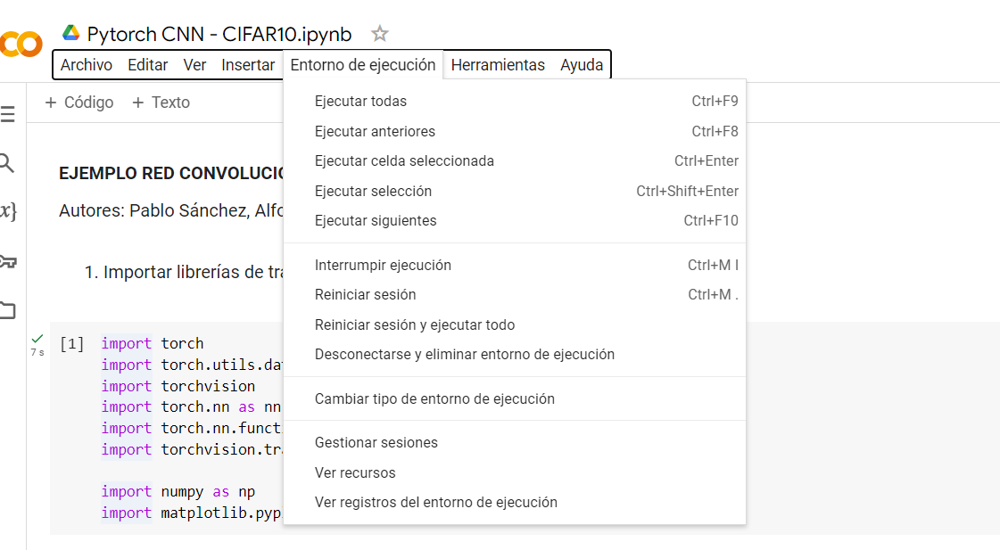
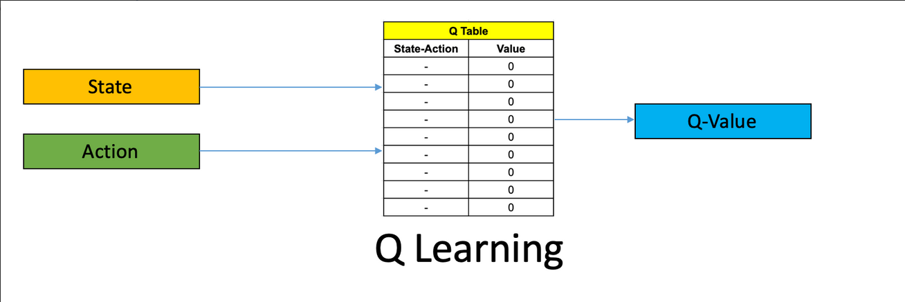

1 Deep Learning
1.1 Introducción
El deep learning, también conocido como aprendizaje profundo, es una disciplina que busca emular el funcionamiento del cerebro mediante el uso de hardware y software, generando inteligencia artificial. Este enfoque se materializa en redes neuronales artificiales (RNA), que emplean una abstracción jerárquica para representar datos en múltiples niveles. El proceso implica la utilización de arquitecturas de varias capas, donde cada una aprende patrones más complejos, favoreciendo el aprendizaje útil. Generalmente, se emplea aprendizaje no supervisado para guiar el entrenamiento de las capas intermedias. Aunque derivado del machine learning, el deep learning se distingue por su arquitectura en capas, inCluyendo redes convolucionales y recurrentes, en contraste con métodos más simples como el Perceptrón Multicapa de una sola capa. Su avance se vio inicialmente obstaculizado por problemas de estancamiento en mínimos locales, resueltos mediante preentrenamiento no supervisado de las capas. Este enfoque ha impulsado un rápido crecimiento en el desarrollo de arquitecturas y algoritmos de RNA en los últimos años, manteniendo la esencia del aprendizaje jerárquico y profundo.
Las redes neuronales tienen una amplia gama de aplicaciones en diversos campos, desde la clasificación y regresión de datos hasta la identificación de imágenes, texto y audio.
En la identificación de imágenes, por ejemplo, pueden reconocer animales, señales de tráfico, frutas, caras humanas e incluso tumores malignos en radiografías. A medida que se combinan estas capacidades, se pueden abordar problemas más complejos como la detección de objetos y personas en imágenes o el etiquetado de escenas. Con el análisis de videos, las redes neuronales pueden contar personas, reconocer objetos y señales de tráfico, o detectar comportamientos como llevar un arma.
Cuando se trata de datos de texto, las redes neuronales se utilizan en sistemas de traducción, chatbots y conversión de texto a audio. En el caso de datos de audio, se emplean en sistemas de traducción, altavoces inteligentes y conversión de audio a texto.
Para trabajar con redes neuronales, es crucial representar los datos de entrada numéricamente, incluso convirtiendo variables categóricas en valores numéricos y normalizando los datos entre 0 y 1. Esto facilita la convergencia hacia soluciones óptimas. Es importante que los datos seán números en coma flotante, sobre todo si se van a trabajar con GPUs, Graphics Process Units, ya que permitirán hacer un mejor uso de los multiples cores que les permiten operar en coma flotante de forma paralela. Actualmente, hay toda una serie de mejoras en las GPUs que permite aumentar el rendimiento de las redes neuronales como son el uso de operaciones en FP16 (Floating Point de 16 bits en lugar de 32) de forma que pueden hacer dos operaciones de forma simultánea (el formato estándar es FP32) y además con la reducción de memoria (punto muy importante) al meter en los 32 bits 2 datos en lugar de sólo uno. También se han añadido técnicas de Mixed Precision (Narang et al. 2018), los Tensor Cores (para las gráficas de NVIDIA) son otra de las mejoras que se han ido incorporando a la GPUs y que permiten acelerar los procesos tanto de entrenamiento como de predicción con las redes neuronales.
1.2 Principales arquitecturas y software de Deep Learning
1.2.1 Principales arquitecturas
Actualmente existen muchos tipos de estructuras de redes neuronales artificiales dado que logran resultados extraordinarios en muchos campos del conocimiento. Los primeros éxitos en el aprendizaje profundo se lograron a través de las investigaciones y trabajos de Geoffre Hinton (2006) que introduce las Redes de Creencia Profunda en cada capa de la red de una Máquina de Boltzmann Restringida (RBM) para la asignación inicial de los pesos sinápticos. Hace tiempo que se está trabajando con arquitecturas como los Autoencoders, Hinton y Zemel (1994), las RBMs de Hinton y Sejnowski (1986) y las DBNs (Deep Belief Networks), Hinton et al. (2006) y otras como las redes recurrentes y convolucionales. Estas técnicas constituyen en sí mismas arquitecturas de redes neuronales, aunque también algunas de ellas, como se ha afirmado en la introducción, se están empleando para inicializar los pesos de arquitecturas profundas de redes neuronales supervisadas con conexiones hacia adelante.
Redes Convolucionales
Las redes neuronales convolucionales (CNNs) han transformado el panorama del Deep Learning, destacándose por su habilidad para extraer características de alto nivel a través de la operación de convolución. Diseñadas específicamente para el procesamiento de imágenes, las CNNs son altamente eficientes en tareas de clasificación y segmentación en el ámbito de la visión artificial.
Inspiradas en el funcionamiento de la corteza visual del cerebro humano, estas redes representan una evolución del perceptrón multicapa. Aunque su uso se popularizó en la década de 1990 con el desarrollo de sistemas de lectura de cheques por parte de AT&T, las CNNs han experimentado una evolución significativa desde entonces.
Su arquitectura se compone de capas de convolución, responsables de transformar los datos de entrada, y capas de pooling, encargadas de resumir la información relevante. Posteriormente, se aplican capas densamente conectadas para obtener el resultado final.
El auge de las CNNs se vio impulsado por iniciativas como la competencia ILSVRC, que propiciaron avances considerables en este campo. Entre los modelos más destacados se encuentran LeNet-5, AlexNet, VGG, GoogLeNet y ResNet, muchos de los cuales están disponibles como modelos preentrenados para su integración en diversas aplicaciones. Estos modelos, con estructuras de capas más complejas, representan el estado del arte en reconocimiento visual y están al alcance de cualquier investigador interesado en el Deep Learning.
Más allá de las arquitecturas conocidas, han surgido modelos más avanzados como DenseNet y EfficientNet, que optimizan el rendimiento y la eficiencia computacional. La transferencia de aprendizaje se ha convertido en una herramienta fundamental, permitiendo adaptar modelos preentrenados a tareas específicas con conjuntos de datos más pequeños, agilizando el entrenamiento y mejorando la generalización.
Las CNNs encuentran un amplio uso en tareas de segmentación semántica y detección de objetos, impulsadas por técnicas como U-Net y Mask R-CNN. Adicionalmente, métodos de aprendizaje débilmente supervisado y autoetiquetado están permitiendo entrenar modelos con datos etiquetados de manera menos precisa o incluso sin etiquetar.
Para mejorar la interpretabilidad de las CNNs, se han propuesto técnicas de visualización de atención visual, que permiten identificar las partes de una imagen que son más relevantes para la predicción del modelo.
Estos avances impulsan el continuo desarrollo de las CNNs, expandiendo su aplicación a diversos campos como el diagnóstico médico, la conducción autónoma y la robótica. La investigación activa en este campo sigue explorando nuevas formas de mejorar la eficiencia, la precisión y la interpretabilidad de las CNNs para abordar desafíos cada vez más complejos en el procesamiento de imágenes y otros tipos de datos.
Autoencoders
Los Autoencoders (AE) son una clase de redes neuronales dentro del ámbito del Deep Learning, caracterizadas por su enfoque en el aprendizaje no supervisado. Aunque se mencionaron por primera vez en la década de 1980, ha sido en los últimos años donde han experimentado un notable interés y desarrollo. La arquitectura de un AE consiste en dos partes principales: el encoder y el decoder. El encoder se encarga de codificar o comprimir los datos de entrada, mientras que el decoder se encarga de regenerar los datos originales en la salida, lo que resulta en una estructura simétrica.
Durante el entrenamiento, el AE aprende a reconstruir los datos de entrada en la capa de salida de la red, generalmente implementando restricciones como la reducción de elementos en las capas ocultas del encoder. Esto evita simplemente copiar la entrada en la salida y obliga al modelo a aprender representaciones más significativas de los datos. Entre las aplicaciones principales de los AE se encuentran la reducción de dimensiones y compresión de datos, la búsqueda de imágenes, la detección de anomalías y la eliminación de ruido.
Además de los autoencoders estándar, existen varias variaciones que han surgido para abordar diferentes desafíos y aplicaciones específicas, como los Variational Autoencoders (VAE), los Sparse Autoencoders, los Denoising Autoencoders y los Contractive Autoencoders. Estas variaciones amplían el alcance y la versatilidad de los autoencoders en una variedad de contextos de aprendizaje automático, desde la compresión de datos hasta la generación de nuevas muestras y la detección de anomalías en conjuntos de datos complejos.
Redes Recurrentes
Las redes neuronales recurrentes (RNNs) revolucionaron el panorama del machine learning, posicionándose como una herramienta fundamental para procesar y analizar datos secuenciales. A diferencia de las redes neuronales tradicionales con una estructura de capas fija, las RNNs poseen una arquitectura flexible que les permite incorporar información del pasado, presente y futuro, lo que las convirtió en una gran apuesta ante tareas omo el procesamiento del lenguaje natural, el reconocimiento de voz y la predicción de series temporales.
Gracias a su capacidad de memoria interna, las RNNs pueden capturar dependencias temporales en los datos secuenciales, una característica crucial para modelar el comportamiento de fenómenos que evolucionan con el tiempo. Esta característica las diferencia de las redes neuronales clásicas, que no tienen en cuenta el contexto temporal de la información.
La familia de las RNNs abarca diversas arquitecturas, cada una con sus propias fortalezas y aplicaciones. Entre las más populares encontramos las redes de Elman, las redes de Jordan, las redes Long Short-Term Memory (LSTM) y las redes Gated Recurrent Unit (GRU) que, introducidas en 2015 son una alternativa más ligera y eficiente a las LSTM.
El campo de las RNNs ha experimentado un rápido crecimiento en los últimos años, impulsado por avances en investigación y la disponibilidad de conjuntos de datos masivos. Entre las mejoras más notables encontramos las redes neuronales convolucionales recurrentes (CRNNs), las redes neuronales con atención y la integración del aprendizaje por refuerzo. Estas mejoras han ampliado aún más las capacidades de las RNNs, permitiéndolas abordar tareas cada vez más complejas y desafiantes.
Redes Generativas Adversarias
Las Generative Adversarial Networks (GAN) representan una innovadora aplicación del deep learning en la generación de contenido sintético, incluyendo imágenes, videos, música y caras extremadamente realistas. La arquitectura de una GAN consiste en dos componentes principales: un generador y un discriminador. El generador se encarga de crear nuevos datos sintéticos, como imágenes, a partir de un vector aleatorio en el espacio latente. Por otro lado, el discriminador tiene la tarea de distinguir entre datos reales y sintéticos, es decir, determinar si una imagen proviene del conjunto de datos original o si fue creada por el generador.
El generador se implementa típicamente utilizando una red neuronal convolucional profunda, con capas especializadas que aprenden a generar características de imágenes en lugar de extraerlas de una imagen de entrada. Algunas de las capas más comunes utilizadas en el modelo del generador son la capa de muestreo (UpSampling2D) que duplica las dimensiones de la entrada, y la capa convolucional de transposición (Conv2DTranspose) que realiza una operación de convolución inversa para generar datos sintéticos.
La idea clave detrás de las GAN es el entrenamiento adversarial, donde el generador y el discriminador compiten entre sí en un juego de suma cero. Mientras el generador trata de engañar al discriminador generando datos cada vez más realistas, el discriminador mejora su capacidad para distinguir entre datos reales y sintéticos. Este proceso de competencia continua lleva a la generación de datos sintéticos de alta calidad que son indistinguibles de los datos reales para el discriminador.
En los últimos años, las GAN han experimentado avances significativos en términos de nuevas arquitecturas y técnicas de entrenamiento. Por ejemplo, se han desarrollado variantes como las Conditional GAN (cGAN), que permiten controlar las características de los datos generados, y las Progressive GAN (ProgGAN), que generan imágenes de mayor resolución de forma progresiva. Además, se han propuesto técnicas de regularización, como la penalización del gradiente o la normalización espectral, para mejorar la estabilidad y la calidad de las GAN generadas.
Las GANs han abierto un abanico de posibilidades en diversos campos como el ámbito de la generación de texto así como aplicaciones en la realidad aumentada donde permiten integrar elementos sintéticos en el mundo real de forma realista, como la creación de avatares virtuales o la superposición de información sobre objetos físicos. Asimismo, de los videojuegos, las GANs se utilizan para desarrollar personajes, escenarios y objetos virtuales de alta calidad para experiencias de juego más inmersivas.
Boltzmann Machine y Restricted Boltzmann Machine
El aprendizaje de la denominada máquina de Boltzmann (BM) se realiza a través de un algoritmo estocástico que proviene de ideas basadas en la mecánica estadística. Este prototipo de red neuronal tiene una característica distintiva y es que el uso de conexiones sinápticas entre las neuronas es simétrico.
Las neuronas son de dos tipos: visibles y ocultas. Las neuronas visibles son las que interactúan y proveen una interface entre la red y el ambiente en el que operan, mientras que las neuronas actúan libremente sin interacciones con el entorno. Esta máquina dispone de dos modos de operación. El primero es la condición de anclaje donde las neuronas están fijas por los estímulos específicos que impone el ambiente. El otro modo es la condición de libertad, donde tanto las neuronas ocultas como las visibles actúan libremente sin condiciones impuestas por el medio ambiente. Las maquinas restringidas de Boltzmann (RBM) solamente toman en cuenta aquellos modelos en los que no existen conexiones del tipo visible-visible y oculta-oculta. Estas redes también asumen que los datos de entrenamiento son independientes y están idénticamente distribuidos.
Una forma de estimar los parámetros de un modelo estocástico es calculando la máxima verosimilitud. Para ello, se hace uso de los Markov Random Fiels (MRF), ya que al encontrar los parámetros que maximizan los datos de entrenamiento bajo una distribución MRF, equivale a encontrar los parámetros \(\theta\) que maximizan la verosimilitud de los datos de entrenamiento, Fischer e Igel (2012). Maximizar dicha verosimilitud es el objetivo que persigue el algoritmo de entrenamiento de una RBM. A pesar de utilizar la distribución MRF, computacionalmente hablando se llega a ecuaciones inviables de implementar. Para evitar el problema anterior, las esperanzas que se obtienen de MRF pueden ser aproximadas por muestras extraídas de distribuciones basadas en las técnicas de Markov Chain Monte Carlo Techniques (MCMC). Las técnicas de MCMC utilizan un algoritmo denominado muestreo de Gibbs con el que obtenemos una secuencia de observaciones o muestras que se aproximan a partir de una distribución de verosimilitud de múltiples variables aleatorias. La idea básica del muestreo de Gibss es actualizar cada variable posteriormente en base a su distribución condicional dado el estado de las otras variables.
Deep Belief Network
Una red Deep Belief Network tal como demostró Hinton se puede considerar como un “apilamiento de redes restringidas de Boltzmann”. Tiene una estructura jerárquica que, como es sabido, es una de las características del deep learning. Como en el anterior modelo, esta red también es un modelo en grafo estocástico, que aprende a extraer una representación jerárquica profunda de los datos de entrenamiento. Cada capa de la RBM extrae un nivel de abstracción de características de los datos de entrenamiento, cada vez más significativo; pero para ello, la capa siguiente necesita la información de la capa anterior lo que implica el uso de las variables latentes.
Estos modelos caracterizan la distribución conjunta \(h_k\) entre el vector de observaciones x y las capas ocultas, donde \(x=h_0\), es una distribución condicional para las unidades visibles limitadas sobre las unidades ocultas que pertenecen a la RBM en el nivel k, y es la distribución conjunta oculta visible en la red RBM del nivel superior o de salida.
El entrenamiento de esta red puede ser híbrido, empezando por un entrenamiento no supervisado para después aplicar un entrenamiento supervisado para un mejor y más óptimo ajuste, aunque pueden aplicarse diferentes tipos de entrenamiento, Bengio et al. (2007) y Salakhutdinov (2014) Para realizar un entrenamiento no supervisado se aplica a las redes de creencia profunda con Redes restringidas de Boltzmann el método de bloque constructor que fue presentado por Hinton (2006) y por Bengio (2007).
1.2.2 Software
Como se verá en los siguientes epígrafes, la opción preferida para este módulo de Deep Learning es el software llamado Keras que está programado en Python. En términos de eficiencia y de aprendizaje Keras presenta unas ventajas importantes que se especifican más adelante.
Aunque nuestra preferencia a nivel formativo es el uso de Keras y Tensorflow, a continuación serán descritos los principales softwares con los que poder realizar implementaciones de arquitecturas de aprendizaje profundo: TensorFlow, Keras, Pytorch, MXNET, Caffe y JAX.
Por su parte, también presentaremos Colaboratory Environment (Colab), una herramienta de Google que dispone en la web y que no requiere ninguna instalación en nuestros ordenadores. Esta propuesta de Google resulta muy interesante dado que no requiere coste alguno, se puede ejecutar desde cualquier lugar aumentando nuestros recursos a la hora de trabajar con Deep Learning y admitiendo a su vez la implementación tanto de código Python como de R.
TensorFlow
TensorFlow es una biblioteca de código abierto para el cálculo numérico desarrollada por Google. Es una de las herramientas de Deep Learning más populares y ampliamente utilizadas, conocida por su flexibilidad, escalabilidad y comunidad activa. TensorFlow ofrece una amplia gama de funciones para construir, entrenar y desplegar modelos de Deep Learning, incluyendo:
- Soporte para una variedad de arquitecturas de redes neuronales: permite construir una amplia gama de arquitecturas de redes neuronales, desde redes convolucionales y recurrentes hasta modelos de atención y redes generativas adversarias (GANs)
- Escalabilidad a grandes conjuntos de datos: está diseñado para manejar grandes conjuntos de datos y puede distribuirse en múltiples GPUs o TPU para acelerar el entrenamiento de modelos
- Amplia gama de herramientas de visualización y depuración: proporciona una variedad de herramientas para visualizar y depurar modelos de Deep Learning, lo que facilita la identificación y resolución de problemas
- Gran comunidad y recursos: cuenta con una gran y activa comunidad de desarrolladores y usuarios que proporcionan soporte y comparten recursos
Pytorch
PyTorch es una biblioteca de código abierto para el aprendizaje automático desarrollada por Facebook. Es conocida por su sintaxis intuitiva y facilidad de uso, lo que la convierte en una opción popular para investigadores y desarrolladores principiantes. PyTorch ofrece características similares a TensorFlow, incluyendo:
- Soporte para una variedad de arquitecturas de redes neuronales: permite construir una amplia gama de arquitecturas de redes neuronales, desde redes convolucionales y recurrentes hasta modelos de atención y GANs
- Ejecución dinámica de gráficos: utiliza un motor de ejecución de gráficos dinámico, lo que permite modificar los modelos durante el entrenamiento, lo que facilita la experimentación y el ajuste fino
- Amplia gama de bibliotecas y herramientas de terceros: se beneficia de un ecosistema rico de bibliotecas y herramientas de terceros que amplían sus capacidades
- Facilidad de uso: tiene una sintaxis similar a Python, lo que la hace fácil de aprender y usar para desarrolladores con experiencia en Python
Keras
Keras es una biblioteca de código abierto para el aprendizaje automático de alto nivel que se ejecuta sobre TensorFlow o PyTorch. Es conocida por su simplicidad y facilidad de uso, lo que la convierte en una opción popular para principiantes y para desarrollar prototipos de modelos rápidamente. Keras ofrece una interfaz de alto nivel que abstrae las complejidades de las bibliotecas subyacentes, como TensorFlow o PyTorch, lo que permite a los usuarios centrarse en la construcción y el entrenamiento de modelos sin necesidad de profundizar en los detalles de implementación. Entre las principales características de Keras destaca:
- Simplicidad: tiene una sintaxis intuitiva y fácil de aprender, lo que la hace ideal para principiantes y para desarrollar prototipos de modelos rápidamente
- Facilidad de uso: ofrece una API de alto nivel que abstrae las complejidades de las bibliotecas subyacentes, como TensorFlow o PyTorch, lo que permite a los usuarios centrarse en la construcción y el entrenamiento de modelos sin necesidad de profundizar en los detalles de implementación
- Flexibilidad: permite construir una amplia gama de modelos de Deep Learning, desde redes neuronales convolucionales y recurrentes hasta modelos de atención y redes generativas adversarias (GANs)
- Modularidad: al ser una biblioteca modular que permite a los usuarios combinar diferentes componentes para construir sus modelos personalizados
- Soporte para múltiples plataformas: se puede utilizar en una variedad de plataformas, incluyendo Windows, macOS y Linux.
JAX
JAX, desarrollada por Google Research, se posiciona como una biblioteca de Python para el aprendizaje automático y el cálculo numérico, diseñada para ofrecer un rendimiento y una flexibilidad excepcionales, especialmente en el entrenamiento de modelos de deep learning en aceleradores como GPUs y TPUs.
Su enfoque se basa en la composición de funciones puras y transformaciones automáticas de gradiente, lo que la convierte en una herramienta ideal para implementar algoritmos de aprendizaje automático diferenciables y de alto rendimiento. Entre sus características destacadas encontramos:
- Autodiferenciación: calcula automáticamente gradientes (autodiferenciación), simplificando el desarrollo de modelos de deep learning
- Composición eficiente de transformaciones: combina operaciones elementales en funciones compuestas para un procesamiento eficiente
- Integración con frameworks: se integra con frameworks de deep learning como TensorFlow y PyTorch, aprovechando las ventajas de cada uno
- Paralelización y distribución: permite ejecutar operaciones en paralelo y de manera distribuida, ideal para grandes conjuntos de datos
- Altas prestaciones para el entrenamiento de modelos: sobresale por su capacidad de computación de alto rendimiento, haciéndola ideal para entrenar modelos de deep learning complejos de manera eficiente. Así, se ha convertido en una opción atractiva para aquellos que manejan grandes conjuntos de datos y buscan optimizar el tiempo de entrenamiento
- Flexibilidad para la investigación y experimentación: facilita la implementación de nuevas arquitecturas y algoritmos, permitiendo explorar diferentes enfoques y optimizar el rendimiento de los modelos
- Personalización de flujos de trabajo: permite definir funciones y transformaciones personalizadas, proporcionando un control preciso sobre el pipeline de trabajo. Esto resulta útil para adaptar el proceso de entrenamiento a necesidades específicas y optimizar el rendimiento para tareas concretas
Mxnet
MXNet es una biblioteca de código abierto para el aprendizaje automático desarrollada por Apache Software Foundation. Es conocida por su escalabilidad, flexibilidad y soporte para múltiples lenguajes de programación, incluyendo Python, R y C++. MXNet ofrece características similares a TensorFlow y PyTorch, incluyendo:
- Soporte para una variedad de arquitecturas de redes neuronales: permite construir una amplia gama de arquitecturas de redes neuronales, desde redes convolucionales y recurrentes hasta modelos de atención y GANs
- Escalabilidad a grandes conjuntos de datos: está diseñado para manejar grandes conjuntos de datos y puede distribuirse en múltiples GPUs o TPU para acelerar el entrenamiento de modelos
- Soporte para múltiples lenguajes de programación: se puede utilizar con Python, R y C++, lo que lo hace accesible a una amplia gama de desarrolladores
- Flexibilidad: permite a los usuarios personalizar y extender la biblioteca para satisfacer sus necesidades específicas
Caffe
Caffe es un marco de código abierto para el aprendizaje profundo desarrollado por la Universidad de California, Berkeley. Es conocido por su simplicidad, velocidad y eficiencia, lo que lo convierte en una opción popular para aplicaciones de Deep Learning en tiempo real. Caffe ofrece características similares a TensorFlow y PyTorch, incluyendo:
- Soporte para una variedad de arquitecturas de redes neuronales: permite construir una amplia gama de arquitecturas de redes neuronales, desde redes convolucionales y recurrentes hasta modelos de atención y GANs
- Entrenamiento rápido y eficiente: está optimizado para el rendimiento y la eficiencia, lo que lo hace ideal para aplicaciones de aprendizaje profundo
1.2.2.1 Google Colab
El entorno Colab (Google Colaboratory) es una potente herramienta de google para ejecutar código incluido el deep Dearning y que está disponible en la web (https://colab.research.google.com/). Se ha desarrollado para Python, pero actualmente también se puede ejecutar código de R. Esta funcionalidad puede importar un conjunto de datos de imágenes, entrenar un clasificador con este conjunto de datos y evaluar el modelo con tan solo usar unas pocas líneas de código. Los cuadernos de Colab ejecutan código en los servidores en la nube de Google, lo que nos permite aprovechar la potencia del hardware de Google, incluidas las GPU y TPU, independientemente de la potencia de tu equipo. Lo único que se necesita es un navegador.
Con Colab se puede aprovechar toda la potencia de las bibliotecas más populares de Python para analizar y visualizar datos. La celda de código de abajo utiliza NumPy para generar datos aleatorios y Matplotlib para visualizarlos. Para editar el código, solo se tiene que hacer clic en la celda.
 {#fig-colab_1]
{#fig-colab_1]
Este es el menú principal de colab desde donde podemos gestionar nuestros proyectos:
 {#fig-colab_nuevo_fichero]
{#fig-colab_nuevo_fichero]
Desde el menú Archivo, como en la mayor parte de los programas, podemos llevar a cabo las operaciones habituales de abrir y guardar los ficheros en diferentes formatos. En este caso se pueden abrir ficheros de Jupyter/Python desde cualquier dispositivo externo, desde el repositorio Drive o de Github:
{#fig-colab_importa]
Si queremos subir un fichero que tenemos en nuestro ordenador vamos a Archivo/Subir cuaderno y podemos elegir nuestro archivo cuando se despliegue la siguiente pantalla:
 {#fig-colab_importa_archivo]
{#fig-colab_importa_archivo]
Como se ha comentado también se pueden importar archivos desde GitHub introduciendo la url de GitHub:
 {#fig-colab_importa_github]
{#fig-colab_importa_github]
Por último, colab nos permite tener acceso tanto a GPUs de forma como a CPUs más potentes que nuestro ordenador de escritorio de forma gratuita.
{#fig-colab_entorno_ejecucion_inicio]
1.3 Conceptos básicos de las Redes Neuronales
Vamos a hacer una revisión de las redes neuronales para posteriormente poder abordar los diferentes tipos de redes neuronales que se utilizan en Deep Learning. Algunos de los avances más recientes en varios de los diferentes componentes que forman parte de las redes neuronales están recopilados en (Gu et al. 2017)
Las redes neuronales artificiales tienen sus orígenes en el Perceptrón, que fue el modelo creado por Frank Rosenblatt en 1957 y basado en los trabajos que previamente habían realizado Warren McCullon (neurofisiólogo) y Walter Pitts (matemático).
El Perceptrón está construido por una neurona artificial cuyas entradas y salida pueden ser datos numéricos, no como pasaba con la neurona de McCulloch y Pitts (eran sólo datos lógicos). Las neuronas pueden tener pesos y además se le aplica una función de activación Sigmoid (a diferencia de la usada anteriormente al Paso binario).
En esta neurona nos encontramos que se realizan los siguientes cálculos: \[ z = \sum_{i=1}^{n}w_ix_i+b_i\] \[\hat{y} = \delta (z)\] donde representan los datos numéricos de entrada, son los pesos, es el sesgo (bias), es la función de activación y finalmente es el dato de salida.
El modelo de perceptrón es el más simple, en el que hay una sola capa oculta con una única neurona.
El siguiente paso nos lleva al Perceptrón Multicapa donde ya pasamos a tener más de una capa oculta, y además podemos tener múltiples neuronas en cada capa oculta.
Cuando todas las neuronas de una capa están interconectadas con todas las de la siguiente capa estamos ante una red neuronal densamente conectada. A lo largo de las siguientes secciones nos encontraremos con redes en las que no todas las neuronas de una capa se conectan con todas de la siguiente.
Veamos como describiríamos ahora los resultados de las capas \[ z_j^{(l)}=\sum_{i=1}^{n_j} w_{i j}^{(l)} a_i^{(l-1)}+b_i^{(l)} \\ a_j^{(l)}=\delta^{(l)}\left(z_j^{(l)}\right) \] donde \(a_i^{(l-1)}\) representan los datos de la neurona \(i\) en la capa \(l-1\) ( siendo \(a_i^0=x_i\) los valores de entrada), \(w_{i j}^{(l)}\) son los pesos en la capa \(l\), \(b_i^{(l)}\) es el sesgo (bias) en la capa \(l\), \(\delta^{(l)}\) es la función de activación en la capa \(l\) (puede que cada capa tenga una función de activación diferente), \(n_j\) es el número de neurona de la capa anterior que conectan con la \(j\) y finalmente \(a_j^{(l)}\) es el dato de salida de la capa \(l\). Es decir, en cada capa para calcular el nuevo valor necesitamos usar los valores de la capa anterior.
Aplicaciones de las Redes Neuronales
Cada día las redes neuronales están más presentes en diferentes campos y ayudan a resolver una gran variedad de problemas. Podríamos pensar que de forma más básica una red neuronal nos puede ayudar a resolver problemas de regresión y clasificación, es decir, podríamos considerarlo como otro modelo más de los existentes que a partir de unos datos de entrada somos capaces de obtener o un dato numérico (o varios) para hacer una regresión (calcular en precio de una vivienda en función de diferentes valores de la misma) o que somos capaces de conseguir que en función de los datos de entrada nos deje clasificada una muestra (decidir si conceder o no una hipoteca en función de diferentes datos del cliente).
Si los datos de entrada son imágenes podríamos estar usando las redes neuronales como una forma de identificar esa imagen:
Identificando que tipo de animal es
Identificando que señal de tráfico es
Identificando que tipo de fruta es
Identificando que una imagen es de exterior o interior de una casa
Identificando que es una cara de una persona
Identificando que una imagen radiográfica represente un tumor maligno
Identificando que haya texto en una imagen
Luego podríamos pasar a revolver problemas más complejos combinando las capacidades anteriores:
Detectar los diferentes objetos y personas que se encuentran en una imagen
Etiquedado de escenas (aula con alumnos, partido de futbol, etc…)
Después podríamos dar el paso al video que lo podríamos considerar como una secuencia de imágenes:
Contar el número de personas que entran y salen de una habitación
Reconocer que es una carretera
Identificar las señales de tráfico
Detectar si alguien lleva un arma
Seguimiento de objetos
Detección de estado/actitud de una persona
Reconocimiento de acciones (interpretar lenguaje de signos, interpretar lenguaje de banderas)
Vehículos inteligentes
Si los datos de entrada son secuencias de texto
Sistemas de traducción - Chatbots (resolución de preguntas a usuarios)
Conversión de texto a audio
Si los datos de entrada son audios
Sistemas de traducción
Altavoces inteligentes
Conversión de audio a texto
A continuación, pasamos a revisar diferentes elementos de las redes neuronales que suelen ser comunes a todos los tipos de redes neuronales.
1.3.1 Datos
Cuando se trabaja con redes neuronales necesitamos representar los valores de las variables de entrada en forma numérica. En una red neuronal todos los datos son siempre numéricos. Esto significa que todas aquellas variables que sean categóricas necesitamos convertirlas en numéricas.
Además, es muy conveniente normalizar los datos para poder trabajar con valores entre 0 y 1, que van a ayudar a que sea más fácil que se pueda converger a la solución. Es importante que los datos seán números en coma flotante, sobre todo si se van a trabajar con GPUs (Graphics Process Units), ya que permitirán hacer un mejor uso de los multiples cores que les permiten operar en coma flotante de forma paralela. Actualmente, hay toda una serie de mejoras en las GPUs que permite aumentar el rendimiento de las redes neuronales como son el uso de operaciones en FP16 (Floating Point de 16 bits en lugar de 32) de forma que pueden hacer dos operaciones de forma simultánea (el formato estándar es FP32) y además con la reducción de memoria (punto muy importante) al meter en los 32 bits 2 datos en lugar de sólo uno. También se han añadido técnicas de Mixed Precision (Narang et al. 2018), los Tensor Cores (para las gráficas de NVIDIA) son otra de las mejoras que se han ido incorporando a la GPUs y que permiten acelerar los procesos tanto de entrenamiento como de predicción con las redes neuronales.
El primer objetivo será convertir las variables categóricas en variables numéricas, de forma la red neuronal pueda trabajar con ellas. Para realizar la conversión de categórica a numérica básicamente tenemos dos métodos para realizarlo:
Codificación one-hot.
Codificación entera.
La codificación one-hot consiste en crear tantas variables como categorías tenga la variable, de forma que se asigna el valor 1 si tiene esa categoría y el 0 si no la tiene.
La codificación entera lo que hace es codificar con un número cada categoría. Realmente esta asignación no tiene ninguna interpretación numérica ya que en general las categorías no tienen porque representar un orden al que asociarlas.
Normalmente se trabaja con codificación one-hot para representar los datos categóricos de forma que será necesario preprocesar los datos de partida para realizar esta conversión, creando tantas variables como categorías haya por cada variable.
Si nosotros tenemos nuestra muestra de datos que tiene \(n\) variables \(x=\{x_1,x_2,...,x_n\}\) de forma que \(x_{n-2},x_{n-1},x_n\) son variables categóricas que tienen \(k,l,m\) número de categorías respectivamente, tendremos finalmente las siguientes variables sólo numéricas: \[ x=\{x_1,x_2,...,x_{(n-2)_1},...,x_{(n-2)_k},x_{(n-1)_1},...,x_{(n-1)_l},x_{n_1},...,x_{n_m}\} \]
De esta forma, se aumentarán el número de variables con las que vamos a trabajar en función de las categorías que tengan las variables categóricas. Normalmente nos encontramos que en una red neuronal las variables de salida son:
- un número (regresión)
- una serie de números (regresión múltiple)
- un dato binario (clasificación binaria)
- una serie de datos binarios que representa una categoría de varias (clasifiación múltiple)
1.3.2 Arquitectura de red
Para la construcción de una red neuronal necesitamos definir la arquitectura de esa red. Esta arquitectura, si estamos pensando en una red neuronal densamente conectada, estará definida por la cantidad de capas ocultas y el número de neuronas que tenemos en cada capa. Más adelante veremos que dependiendo del tipo de red neuronal podrá haber otro tipo de elementos en estas capas.
1.3.3 Función de coste y pérdida
Otro de los elementos clave que tenemos que tener en cuenta a la hora de usar nuestra red neuronal son las funciones de pérdida y funciones de coste (objetivo).
La función de pérdida va a ser la función que nos dice cómo de diferente es el resultado del dato que nosotros queríamos conseguir respecto al dato original. Normalmente se suelen usar diferentes tipos de funciones de pérdida en función del tipo de resultado con el que se vaya a trabajar.
La función de coste es la función que vamos a tener que optimizar para conseguir el mínimo valor posible, y que recoge el valor de la función de pérdida para toda la muestra.
Tanto las funciones de pérdida como las funciones de coste, son funciones que devuelven valores de de \(\mathbb{R}\)..
Si tenemos un problema de regresión en el que tenemos que predecir un valor o varios valores numéricos, algunas de las funciones a usar son:
- Error medio cuadrático \(\left(\mathrm{L}_2^2\right)\)
\[ \mathcal{L}_{\text {MSE }}(\mathrm{y}, \hat{\mathrm{y}})=\|\hat{\mathrm{y}}-\mathrm{y}\|^2=\sum_{\mathrm{i}=1}^{\mathrm{n}}\left(\hat{\mathrm{y}}_{\mathrm{i}}-\mathrm{y}_{\mathrm{i}}\right)^2 \] donde \(\hat{y}\) y y son vectores de tamaño \(n, y\) es el valor real e \(\hat{y}\) es el valor predicho
- Error medio absoluto ( \(\mathrm{L}_1\) )
\[ \mathcal{L}_{\text {MAE }}(\mathrm{y}, \hat{y})=|\hat{y}-y|=\sum_{i=0}^n\left|\hat{y}_i-y_i\right| \] donde \(\hat{y}\) y y son vectores de tamaño \(n, y\) es el valor real e \(\hat{y}\) es el valor predicho
Para los problemas de clasifiación:
- Binary Crossentropy (Sólo hay dos clases) \[ \mathcal{L}_{\text {CRE }}(\mathrm{y}, \hat{y})=-(\mathrm{y} \log (\hat{y})+(1-\mathrm{y}) \log (1-\hat{y})) \]
\(\mathrm{y}\) es el valor real e \(\hat{y}\) es el valor predicho
- Categorical Crosentropy (Múltiples clases representadas como one-hot)
\[ \mathcal{L}_{\text {CAE }}\left(\mathrm{y}_{\mathrm{c}}, \hat{\mathrm{y}}_{\mathrm{c}}\right)=-\sum_{\mathrm{c}=1}^{\mathrm{k}} \mathrm{y}_{\mathrm{c}} \log \left(\hat{y}_c\right) \]
\(y_c\) es el valor real para la clase \(c\) e \(\hat{y}_c\) es el valor predicho para la clase \(c\)
- Sparse Categorical Crossentropy (Múltiples clases representadas comp un entero)
\[ \mathcal{L}_{\text {SCAE }}\left(\mathrm{y}_{\mathrm{c}}, \hat{\mathrm{y}}_{\mathrm{c}}\right)=-\sum_{\mathrm{c}=1}^{\mathrm{k}} \mathrm{y}_{\mathrm{c}} \log \left(\hat{y}_{\mathrm{c}}\right) \]
\(\mathrm{y}_c\) es el valor real para la clase \(c\) e \(\hat{y}_c\) es el valor predicho para la clase \(c\)
- Kullback-Leibler Divergence
Esta función se usa para calcular la diferencia entre dos distribuciones de probabilidad se usa por ejemplo en algunas redes como Variational Autoencoders (Doersch 2016 Modelos GAN (Generative Adversarial Networks)
\[ \mathcal{D}_{\mathrm{KL}}(\mathrm{p} \| \mathrm{q})=-\mathrm{H}(\mathrm{p}(\mathrm{x}))-\mathrm{E}_{\mathrm{p}}[\log \mathrm{q}(\mathrm{x})] \]
\[ =\sum_x p(x) \operatorname{logp}(x)-\sum_x p(x) \log q(x)=\sum_x p(x) \log \frac{p(x)}{q(x)} \]
\[ \mathcal{L}_{\text {vae }}(y, \hat{y})=E_{z \sim q_\phi(z \mid x)}\left[\operatorname{logp}_\theta(x \mid z)\right]-\mathcal{D}_{\text {KL }}\left(q_\phi(z \mid x) \| p(z)\right) \]
- Hinge Loss
\[ \mathcal{L}_{\text {hinge }}(\mathrm{y}, \hat{y})=\max (0,1-\mathrm{y} * \hat{\mathrm{y}}) \]
Las correspondientes funciones de coste que se usarían, estarían asociadas a todas las muestras que se estén entrenando o sus correpondientes batch, así como posibles términos asociados a la regularización para evitar el sobreajuste del entrenamiento. Es decir, la función de pérdida se calcula para cada muestra, y la función de coste es la media de todas las muestras.
Por ejemplo, para el Error medio cuadrático \(\left(L_2\right)\) tendríamos el siguiente valor: \[ \mathcal{J}_{\text {MSB }}(y, \hat{y})=\frac{1}{m} \sum_{i=1}^m \mathcal{L}_{\text {MSE }}(y, \hat{y})=\frac{1}{m} \sum_{i=1}^m|| \hat{y}_i-y_i \|^2=\frac{1}{n} \sum_{i=1}^m \sum_{i=1}^n\left(\hat{y}_{j i}-y_{j i}\right)^2 \]
1.3.4 Optimizador
El Descenso del gradiente es la versión más básica de los algoritmos que permiten el aprendizaje en la red neuronal haciendo el proceso de backpropagation (propagación hacia atrás). A continuación veremos una breve explicación del algoritmo así como algunas variantes del mismo recogidas en (Ruder 2017).
Recordamos que el descenso del gradiente nos permitirá actualizar los parámetros de la red neuronal cada vez que demos una pasada hacia delante con todos los datos de entrada, volviendo con una pasada hacia atrás.
\[\mathrm{w}_{\mathrm{t}}=\mathrm{w}_{\mathrm{t}-1}-\alpha \nabla_{\mathrm{w}} \mathcal{J}(\mathrm{w})\]
donde \(\mathcal{J}\) es la función de coste, \(\alpha\) es el parámetro de ratio de aprendizaje que permite definir como de grandes se quiere que sean los pasos en el aprendizaje.
Cuando lo que hacemos es actualizar los parámetros para cada pasada hacia delante de una sola muestra, estaremos ante lo que llamamos Stochastic Gradient Descent (SGD). En este proceso convergerá en menos iteraciones, aunque puede tener alta varianza en los parámetros.
\[\mathrm{W}_{\mathrm{t}}=\mathrm{w}_{\mathrm{t}-1}-\alpha \nabla_{\mathrm{w}} \mathcal{J}(\mathrm{w}, x(i),y(i))\]
donde \(x(i)\) e \(y(i)\) son los valores en la pasada de la muestra \(i\).
Podemos buscar un punto intermedio que sería cuando trabajamos por lotes y cogemos un bloque de datos de la muestra, les aplicamos la pasada hacia delante y aprendemos los parámetros para ese bloque. En este caso lo llamaremos Mini-batch Gradient Descent
\[\mathrm{W}_{\mathrm{t}}=\mathrm{w}_{\mathrm{t}-1}-\alpha \nabla_{\mathrm{w}} \mathcal{J}(\mathrm{w}, \mathrm{B}(\mathrm{i}))\]
donde \(\mathrm{B}(\mathrm{i})\) son los valores de ese batch .
En general a estos métodos nos referiremos a ellos como SGD.
Sobre este algoritmo base se han hecho ciertas mejoras como:
Learning rate decay Podemos definir un valor de decenso del ratio de aprendizaje, de forma que normalmente al inicio de las iteraciones de la red neuronal los pasos serán más grandes, pero conforme nos acercamos a la solución optima deberemos dar pasos más pequeños para ajustarnos mejor.
\[\mathrm{W}_{\mathrm{t}}=\mathrm{w}_{\mathrm{t}-1}-\alpha_{\mathrm{t}} \nabla_{\mathrm{w}} \mathcal{J}\left(\mathrm{w}_{\mathrm{t}-1}\right)\]
donde \(\alpha _t\) ahora se irá reduciendo en función del valor del decay.
Momentum El momentum se introdujo para suavizar la convergencia y reducir la alta varianza de SGD.
\[ V_ {t} = \gamma v_ {t-1} + \alpha V_ {w} J( w_ {t-1} ,x,y)\] \[ W_ {t} = w_ {t-1} - v_ {1} \]
donde \(v_t\) es lo que se llama el vector velocidad con la dirección correcta.
NAG (Nesterov Accelerated Gradient) Ahora daremos un paso más con el NAG, calculando la función de coste junto con el vector velocidad.
\[ V_ {t} = \gamma v_ {t-1} + \alpha V_ {w} J( w_ {t-1} - \gamma v_ {t-1} ,x,y) \] \[ W_ {t} = w_ {t-1} - v_ {t} \]
donde ahora vemos que la función de coste se calcula usando los parámetros de \(w_t\) sumado a \(\gamma v_ {t-1}\)
Veamos algunos algoritmos de optimización más que, aunque provienen del SGD, se consideran independientes a la hora de usarlos y no como parámetros extras del SGD.
Adagrad (Adaptive Gradient) Esta variante del algoritmo lo que hace es adaptar el ratio de aprendizaje para cada uno de los pesos en lugar de que sea global para todos.
\[ W_ {t,i} = w_ {t-1,i} - \frac {\alpha }{\sqrt {G_ {t-1,i,j}+\epsilon }} \nabla_ {w_{t-1}} J( w_ {t-1,i} ,x,y) \]
donde tenemos que \(G_t \in R^{dxd}\)$es una matriz diagonal donde cada elemento es la suma de los cuadrados de los gradientes en el paso \(t-1\) , y es un término de suavizado para evitar divisiones por 0.
RMSEProp (Root Mean Square Propagation) En este caso tenemos una variación del Adagrad en el que intenta reducir su agresividad reduciendo monotonamente el ratio de aprendizaje. En lugar de usar el gradiente acumulado desde el principio de la ejecución, se restringe a una ventana de tamaño fijo para los últimos n gradientes calculando su media. Así calcularemos primero la media en ejecución de los cuadros de los gradientes como:
\[ \mathrm{E}\left[g^2\right]_{t-1}=\gamma E\left[g^2\right]_{t-2}+(1-\gamma) g_{t-1}^2 \]
y luego ya pasaremos a usar este valor en la actualización
\[ w_{t, i}=w_{t-1, i}-\frac{\alpha}{\sqrt{E\left[ g^2\right]_{t-1}+\epsilon}} \nabla_{w_{t-1}} \mathcal{J}\left(w_{t-1, i}, x, y\right) \]
AdaDelta
Aunque se desarrollaron de forma simultánea el AdaDelta y el RMSProp son muy parecidos en su primer paso incial, llegando el de AdaDelta un poco más lejos en su desarrollo.
\[ w_{t, i}=w_{t-1, i}-\frac{\alpha}{\sqrt{E\left[ g^2\right]_{t-1}+\epsilon}} \nabla_{w_{t-1}} \mathcal{J}\left(w_{t-1, i}, x, y\right) \]
y luego ya pasaremos a usar este valor en la actualización
\[ \begin{gathered}w_{t, i}=w_{t-1, i}-\frac{\alpha}{\sqrt{E\left[g^2\right]_{t-1}+\epsilon}} \nabla_{w_{t-1}} \mathcal{J}\left(w_{\mathrm{t}-1, \mathrm{i}}, \mathrm{X}, \mathrm{y}\right) \\ \Delta w_{\mathrm{t}}=-\frac{\alpha}{\sqrt{\mathrm{E}\left[g^2\right]_{\mathrm{t}}+\epsilon}} g_t\end{gathered} \]
Adam (Adaptive Moment Estimation)
\[ \begin{gathered}G_t=\nabla_{w_t} \mathcal{J}\left(w_t\right) \\ M_{t-1}=\beta_1 m_{t-2}+\left(1-\beta_1\right) g_{t-1} \\ v_{t-1}=\beta_2 v_{t-2}+\left(1-\beta_2\right) g_{t-1}^2\end{gathered} \]
donde \(m_{t-1}\) y \(V_{t-1}\) son estimaciones del primer y segundo momento de los gradientes respectivamente, y \(\beta_1\) y \(\beta_2\) parámetros a asignar.
\[\widehat{M}_{t-1} =\frac{m_{t-1}}{1-\beta_1^{t-1}} \\ \widehat{V}_{t-1} =\frac{v_{t-1}}{1-\beta_2^{t-1}} \\ W_t=w_{t-1} -\frac{\alpha}{\sqrt{\hat{v}_{t-1}+\epsilon}} \widehat{m}_{t-1}\]
Adamax
\[ G_t=\nabla_{w_t} \mathcal{J}\left(w_t\right) \\ M_{t-1}=\beta_1 m_{t-2}+\left(1-\beta_1\right) g_{t-1} \\ \mathrm{~V}_{\mathrm{t}-1}=\beta_2 \mathrm{v}_{\mathrm{t}-2}+\left(1-\beta_2\right) \mathrm{g}_{\mathrm{t}-1}^2 \\ \mathrm{U}_{\mathrm{t}-1}=\max \left(\beta_2 \cdot \mathrm{v}_{\mathrm{t}-1},\left|\mathrm{~g}_{\mathrm{t}}\right|\right) \]
donde \(m_{t-1}\) y \(V_{t-1}\) son estimaciones del primer y segundo momento de los gradientes respectivamente, y \(\beta_1\) y \(\beta_2\) parámetros a asignar.
\[ \widehat{M}_{t-1}=\frac{m_{t-1}}{1-\beta_1^{t-1}} \\ W_t=w_{t-1}-\frac{\alpha}{u_{t-1}} \widehat{m}_{t-1} \]
Nadam (Nesterov-accelerated Adaptive Moment Estimatio) Combina Adam y NAG.
\[ \begin{aligned} G_t & =\nabla_{w_t} \mathcal{J}\left(w_t\right) \\ M_{t-1} & =\gamma m_{t-2}+\alpha g_{t-1} \\ w_t & =w_{t-1}-m_{t-1}\end{aligned} \]
1.3.5 Función de activación
Las funciones de activación dentro de una red neuronal son uno de los elementos clave en el diseño de la misma. Cada tipo de función de activación podrá ayudar a la convergencia de forma más o menos rápida en función del tipo de problema que se plantee. En una red neuronal las funciones de activación en las capas ocultas van a conseguir establecer las restricciones no lineales al pasar de una capa a la siguiente, normalmente se evita usar la función de activación lineal en las capas intermedias ya que queremos conseguir transformaciones no lineales.
A continuación, exponemos las principales funciones de activación en las capas ocultas:
- Paso binario (Usado por los primeros modelos de neuronas)
\(F(x)= \begin{cases}0 & \text { for } x \leq 0 \\ x & \text { for } x>0\end{cases}\)
- Identidad
\(F(x)=x\)
- Sigmoid (Logística)
\(F(x)=\frac{1}{1+e^{-x}}\)
- Tangente Hiperbólica (Tanh)
\(F(x)=\tanh (x)=\frac{\left(e^x-e^{-x}\right)}{\left(e^x+e^{-x}\right)}\)
- Softmax
\(F\left(x_i\right)=\frac{e^{x_i}}{\sum_{j=0}^k e^{x_j}}\)
ReLu ( Rectified Linear Unit) \(\begin{aligned} & F(x)=\max (0, x) \\ & f(x)= \begin{cases}0 & \text { for } x \leq 0 \\ x & \text { for } x>0\end{cases} \end{aligned}\)
LReLU (Leaky Rectified Linear Unit) \(F(\alpha, x)= \begin{cases}\alpha x & \text { for } x<0 \\ x & \text { for } x \geq 0\end{cases}\)
PReLU (Parametric Rectified Linear Unit) \(F(\alpha, x)= \begin{cases}\alpha x & \text { for } x<0 \\ x & \text { for } x \geq 0\end{cases}\)
RReLU (Randomized Rectified Linear Unit) \(F(\alpha, x)= \begin{cases}\alpha x & \text { for } x<0 \\ x & \text { for } x \geq 0\end{cases}\)
*La diferencia entre LReLu, PReLu y RRLeLu es que en LReLu el parámetro es uno que se asigna fijo, en el caso de PReLu el parámetro también se aprende durante el entrenamiento y finalmente en RReLu es un parámetro con valores entre 0 y 1, que se obtiene de un muestreo en una distribución normal.
Se puede profundizar en este grupo de funciones de activación en (Xu et al. 2015)
- ELU (Exponential Linear Unit) \(F(\alpha, x)= \begin{cases}\alpha\left(e^{x-1}\right) & \text { for } x<0 \\ x & \text { for } x \geq 0\end{cases}\)
Función de activación en salida
En la capa de salida tenemos que tener en cuenta cual es el tipo de datos final que queremos obtener, y en función de eso elegiremos cual es la función de activación de salida que usaremos. Normalmente las funciones de activación que se usarán en la última capa seran:
Lineal con una unidad, para regresión de un solo dato numérico \(F(x)=x\) donde es un valor escalar.
Lineal con multiples unidades, para regresión de varios datos numéricos \(F(x)=x\) donde \(x\) es un vector.
Sigmoid para clasifiación binaria \(F(x)=\frac{1}{1+e^{-x}}\)
Softmax para calsifiación múltiple \(F\left(x_i\right)=\frac{e^{x_i}}{\sum_{j=0}^k e^{x_j}}\)
1.3.6 Regularización
Las técnicas de regularización nos permiten conseguir mejorar los problemas que tengamos por sobreajuste en el entrenamiento de nuestra red neuronal.
A continuación, vemos algunas de las técnicas de regularización existentes en la actualidad:
- Norma LP Básicamente estos métodos tratan de hacer que los pesos de las neuronas tengan valores muy pequeños consiguiendo una distribución de pesos más regular. Esto lo consiguen al añadir a la función de pérdida un coste asociado a tener pesos grandes en las neuronas. Este peso se puede construir o bien con la norma L1 (proporcional al valor absoluto) o con la norma L2 (proporcional al cuadrado de los coeficientes de los pesos). En general se define la norma LP) \[ \begin{gathered} E(w, \mathbf{y}, \hat{\mathbf{y}})=\mathcal{L}(w, \mathbf{y}, \hat{\mathbf{y}})+\lambda R(w) \\ R(w)=\sum_j\left\|w_j\right\|_p^p \end{gathered} \]
Para los casos más habituales tendríamos la norma \(\mathbf{L 1}\) y \(\mathbf{L 2}\). \[ \begin{aligned} & R(w)=\sum_j\left\|w_j\right\|^2 \\ & R(w)=\sum_j\left|w_j\right| \end{aligned} \]
1.3.7 Dropout
Una de las técnicas de regularización que más se están usando actualmente es la llamada Dropout, su proceso es muy sencillo y consiste en que en cada iteración de forma aleatoria se dejan de usar un porcentaje de las neuronas de esa capa, de esta forma es más difícil conseguir un sobreajuste porque las neuronas no son capaces de memorizar parte de los datos de entrada.
1.3.8 Dropconnect
El Dropconnect es otra técnica que va un poco más allá del concepto de Dropout y en lugar de usar en cada capa de forma aleatoria una serie de neuronas, lo que se hace es que de forma aleatoria se ponen los pesos de la capa a cero. Es decir, lo que hacemos es que hay ciertos enlaces de alguna neurona de entrada con alguna de salida que no se activan.
1.3.9 Inicialización de pesos
Cuando empieza el entrenamiento de una red neuronal y tiene que realizar la primera pasada hacia delante de los datos, necesitamos que la red neuronal ya tenga asignados algún valor a los pesos.
Se pueden hacer inicializaciones del tipo:
Ceros Todos los pesos se inicializan a 0.
Unos Todos los pesos se inicializan a 1.
Distribución normal. Los pesos se inicializan con una distribución normal, normalmente con media 0 y una desviación alrededor de 0,05. Es decir, valores bastante cercanos al cero.
Distribución normal truncada. Los pesos se inicializan con una distribución normal, normalmente con media 0 y una desviación alrededor de 0,05 y además se truncan con un máximo del doble de la desviación. Los valores aun són más cercanos a cero.
Distribución uniforme. Los pesos se inicializan con una distribución uniforme, normalmente entre el 0 y el 1.
Glorot Normal (También llamada Xavier normal) Los pesos se inicializan partiendo de una distribución normal truncada en la que la desivación es donde es el número de unidades de entrada y fanout es el número de unidades de salida. Ver (Glorot and Bengio 2010)
Glorot Uniforme (También llamada Xavier uniforme) Los pesos se inicializan partiendo de una distribución uniforme donde los límites son \([-\) limit,+ limit \(]\) done limit \(=\sqrt{\frac{6}{\text { fanin }+ \text { fanout }}}\) done \(fanin\) y es el número de unidades de entrada y \(fanout\) es el número de unidades de salida. Ver (Glorot and Bengio 2010)
1.3.10 Batch normalization
Hemos comentado que cuando entrenamos una red neuronal los datos de entrada deben ser todos de tipo numérico y además los normalizamos para tener valores “cercanos a cero”, teniendo una media de 0 y varianza de 1, consiguiendo uniformizar todas las variables y conseguir que la red pueda converger más fácilmente.
Cuando los datos entran a la red neuronal y se comienza a operar con ellos, se convierten en nuevos valores que han perdido esa propiedad de normalización. Lo que hacemos con la normalización por lotes (batch normalization) (Ioffe and Szegedy 2015) es que añadimos un paso extra para normalizar las salidas de las funciones de activación. Lo normal es que se aplicara la normalización con la media y la varianza de todo el bloque de entrenamiento en ese paso, pero normalmente estaremos trabajando por lotes y se calculará la media y varianza con ese lote de datos.
1.3.11 Ejemplo de Red Neuronal con Keras
# Importamos las librerías de keras/tensorflow
from tensorflow import keras
from tensorflow.keras import layers
# Importamos la librería de los datasets de keras y cogemos el de boston_housing
from tensorflow.keras.datasets import boston_housing
# Obtenemos los datos de entrenamiento y test
# separados en las variables explicativas y la objetivo
(train_data, train_targets), (test_data, test_targets) = boston_housing.load_data()
train_data.shape
test_data.shape
# Realizamos la "Normalización" restando la media y dividiendo por la desviación típica
# Ahora tendremos valores (-x,x) alredor de 0, pero en general pequeños
mean = train_data.mean(axis=0)
train_data -= mean
std = train_data.std(axis=0)
train_data /= std
test_data -= mean
test_data /= std
# Creamos el modelo
# Inicializamos el API Secuencial de capas
model = keras.Sequential([
# Añadimos capa de entrada con las 13 variables explicativas
keras.Input(shape=(13,)),
# Añadimos capa densamente conectada con 64 neuronas y activación relu
layers.Dense(64, activation="relu"),
# Añadimos capa densamente conectada con 64 neuronas y activación relu
layers.Dense(64, activation="relu"),
# Añadimos capa de salida densamente conectada con 1 neurona y activación lineal (para regresión)
layers.Dense(1)
])
# Mostramos el Modelo creado
model.summary()
# Compilamos el modelo definiendo el optimizador, función de pérdida y métrica
# RMSProp, mse, mae
model.compile(optimizer="rmsprop", loss="mse", metrics=["mae"])
# Realizamos el entrenamiento
# 130 épocos (iteraciones), con tamaño de batch de 16
history = model.fit(train_data, train_targets,
epochs=130, batch_size=16, verbose=0)
# Importamos la librería de pyplot para pintar gráficas
import matplotlib.pyplot as plt
# list all data in history
print(history.history.keys())
# summarize history for accuracy
plt.plot(history.history['mae'])
#plt.plot(history.history['val_mae'])
plt.title('model mae')
plt.ylabel('mae')
plt.xlabel('epoch')
plt.legend(['train', 'test'], loc='upper left')
plt.show()
# summarize history for loss
plt.plot(history.history['loss'])
#plt.plot(history.history['val_loss'])
plt.title('model loss')
plt.ylabel('loss')
plt.xlabel('epoch')
plt.legend(['train', 'test'], loc='upper left')
plt.show()
# Evaluamos el modelo con los datos de test
predictions = model.predict(test_data)
predictions[0]1.4 Redes Neuronales Convolucionales
1.4.1 Introducción
Esta arquitectura de redes de neuronas convolucionales, CNN, Convolutional Neural Networks es en la actualidad el campo de investigación más fecundo dentro de las redes neuronales artificiales de Deep learning y donde los investigadores, empresas e instituciones están dedicando más recursos e investigación. Para apoyar esta aseveración, en google trend se observa que el término convolutional neural network en relación con el concepto de artificial neural network crece y está por encima desde el año 2016. Es en este último lustro donde el Deep learning ha tomado una importancia considerable.
Las redes convolucionales son actualmente utilizadas para diferentes propósitos: tratamiento de imágenes(visión por computador, extracción de características, segmentación, etc.), generación y clasificación de texto(o audio), predicción de series temporales, etc. En este capítulo veremos su aplicación en clasificación de imágenes y de texto.
1.4.2 Clasificación de imágenes
En este modelo de redes convolucionales las neuronas se corresponden a campos receptivos similares a las neuronas en la corteza visual de un cerebro humano. Este tipo de redes se han mostrado muy efectivas para tareas de detección y categorización de objetos y en la clasificación y segmentación de imágenes. Por ejemplo, estas redes en la década de 1990 las aplicó AT & T para desarrollar un modelo para la lectura de cheques. También más tarde se desarrollaron muchos sistemas OCR basados en CNN. En esta arquitectura cada neurona de una capa no recibe conexiones entrantes de todas las neuronas de la capa anterior, sino sólo de algunas. Esta estrategia favorece que una neurona se especialice en una región del conjunto de números (píxeles) de la capa anterior, lo que disminuye notablemente el número de pesos y de operaciones a realizar. Lo más normal es que neuronas consecutivas de una capa intermedia se especialicen en regiones solapadas de la capa anterior.
Una forma intuitiva para entender cómo trabajan estas redes neuronales es ver cómo nos representamos y vemos las imágenes. Para reconocer una cara primero tenemos que tener una imagen interna de lo que es una cara. Y a una imagen de una cara la reconocemos porque tiene nariz, boca, orejas, ojos, etc. Pero en muchas ocasiones una oreja está tapada por el pelo, es decir, los elementos de una cara se pueden ocultar de alguna manera. Antes de clasificarla, tenemos que saber la proporción y disposición y también cómo se relacionan la partes entre sí.
Para saber si las partes de la cara se encuentran en una imagen tenemos que identificar previamente líneas bordes, formas, texturas, relación de tamaño, etcétera. En una red convolucional, cada capa lo que va a ir aprendiendo son los diferentes niveles de abstracción de la imagen inicial. Para comprender mejor el concepto anterior hemos seleccionado esta imagen de Raschka y Mirjalili (2019) donde se observa como partes del perro se transforman en neuronas del mapa de características
El objetivo de las redes CNN es aprender características de orden superior utilizando la operación de convolución.
Puesto que las redes neuronales convolucionales pueden aprender relaciones de entrada-salida (donde la entrada es una imagen en este caso), en la convolución, cada pixel de salida es una combinación lineal de los pixeles de entrada.
La convolución consiste en filtrar una imagen utilizando una máscara. Diferentes máscaras producen distintos resultados. Las máscaras representan las conexiones entre neuronas de capas anteriores. Estas capas aprenden progresivamente las características de orden superior de la entrada sin procesar.
Las redes neuronales convolucionales se forman usando dos tipos de capas: convolucionales y pooling. La capa de convolución transforma los datos de entrada a través de una operación matemática llamada convolución. Esta operación describe cómo fusionar dos conjuntos de información diferentes. A esta operación se le suele aplicar una función de transformación, generalmente la RELU. Después de la capa o capas de convolución se usa una capa de pooling, cuya función es resumir las respuestas de las salidas cercanas. Antes de obtener el output unimos la última capa de pooling con una red densamente conectada. Previamente se ha aplanado (Flatering) la última capa de pooling para obtener un vector de entrada a la red neural final que nos ofrecerá los resultados.
Las redes neuronales convolucionales debido a su forma de concebirse son aptas para poder aprender a clasificar todo tipo de datos donde éstos estén distribuidos de una forma continua a lo largo del mapa de entrada, y a su vez sean estadísticamente similares en cualquier lugar del mapa de entrada. Por esta razón, son especialmente eficaces para clasificar imágenes. También pueden ser aplicadas para la clasificación de series de tiempo o señales de audio.
En relación con el color y la forma de codificarse, en las redes convolucionales se realiza en tensores 3D, dos ejes para el ancho (width) y el alto (height) y el otro eje llamado de profundidad (depht) que es el canal del color con valor tres si trabajamos con imágenes de color RGB (Red, Green y Blue) rojo, verde y azul. Si disponemos de imágenes en escala de grises el valor de depht es uno. La base de datos MNIST (National Institute of Standards and Technology database) con la que trabajaremos en este epígrafe contiene imágenes de 28 x 28 pixeles, los valores de height y de widht son ambos 28, y al ser una base de datos en blanco y negro el valor de depht es 1.
Las imágenes son matrices de píxeles que van de cero a 255 y que para la red neuronal se normalizan para que sus valores oscilen entre cero y uno.
1.4.2.1 Convolución
En las redes convolucionales todas las neuronas de la capa de entrada (los píxeles de las imágenes) no se conectan con todas las neuronas de la capa oculta del primer nivel como lo hacen las redes clásicas del tipo perceptrón multicapa o las redes que conocemos de forma genérica como redes densamente conectadas. Las conexiones se realizan por pequeñas zonas de la capa de entrada.
Veamos un ejemplo para la base de datos de los dígitos del 1 a 9. Vamos a conectar cada neurona de la capa oculta con una región de 5 x 5 neurona, es decir, con 25 neuronas de la capa de entrada, que podemos denominarla ventana. Esta ventana va a ir recorriendo todo el espacio de entrada de 28 x 28 empezando por arriba y desplazándose de izquierda a derecha y de arriba abajo. Suponemos que los desplazamientos de la ventana son de un paso (un pixel) aunque este es un parámetro de la red que podemos modificar (en la programación lo llamaremos stride).
Para conectar la capa de entrada con la de salida utilizaremos una matriz de pesos (W) de tamaño 3 x 3 que recibe el nombre de filtro (filter) y el valor del sesgo. Para obtener el valor de cada neurona de la capa oculta realizaremos el producto escalar entre el filtro y la ventana de la capa de entrada. Utilizamos el mismo filtro para obtener todas las neuronas de la capa oculta, es decir en todos los productos escalares siempre utilizamos la misma matriz, el mismo filtro.
Se definen matemáticamente estos productos escalares a través de la siguiente expresión:
\[ Y=X * W \rightarrow Y[i, j]=\sum_{k_1=-\infty}^{+\infty} \sum_{k_2=-\infty}^{+\infty} X\left[i-k_1, j-k_2\right] W\left[k_1, k_2\right] \]
Como en este tipo de red un filtro sólo nos permite revelar una característica muy concreta de la imagen, lo que se propone es usar varios filtros simultáneamente, uno para cada característica que queramos detectar. Una forma visual de representarlo (si suponemos que queremos aplicar 32 filtros) es como se muestra a continuación:
Al resultado de la aplicación de los diferentes filtros se les suele aplicar la función de activación denominada RELU y que ya se comentó en la introducción.
Una interesante fuente de información es la documentación del software gratuito GIMP donde expone diferentes efectos que se producen en las imágenes al aplicar diversas convoluciones.
Un ejmplo claro y didáctico lo podemos obtener de la docuemntación del software libre de dibujo y tratamiento de imágenes denominado GIMP (https://docs.gimp.org/2.6/es/plug-in-convmatrix.html). Algunos de estos efectos nos ayudan a entender la operación de los filtros en las redes convolucionales y cómo afectan a las imágenes, en concreto, el ejemplo que presenta lo realiza sobre la figura del Taj Mahal.
El filtro enfocar lo que consigue es afinar los rasgos, los contornos lo que nos permite agudizar los objetos de la imagen. Toma el valor central de la matriz de cinco por cinco lo multiplica por cinco y le resta el valor de los cuatro vecinos. Al final hace una media, lo que mejora la resolución del pixel central porque elimina el ruido o perturbaciones que tiene de sus pixeles vecinos.
El filtro enfocar (Sharpen)
Lo contario al filtro enfocar lo obtenemos a través de la matriz siguiente, difuminando la imagen al ser estos píxeles mezclados o combinados con los pixeles cercanos. Promedia todos los píxeles vecinos a un pixel dado lo que implica que se obtienen bordes borrosos.
Filtro desenfocar
Filtro Detectar bordes (Edge Detect)
Este efecto se consigue mejorando los límites o las aristas de la imagen. En cada píxel se elimina su vecino inmediatamente anterior en horizontal y en vertical. Se eliminan las similitudes vecinas y quedan los bordes resaltados. Al pixel central se le suman los cuatro píxeles vecinos y lo que queda al final es una medida de cómo de diferente es un píxel frente a sus vecinos. En el ejemplo, al hacer esto da un valor de cero de ahí que se observen tantas zonas oscuras.
Filtro Repujado (Emboss)
En este filto se observa que la matriz es simétrica y lo que intenta a través del diseño del filtro es mejorar los píxeles centrales y de derecha abajo restándole los anteriores. Se obtiene lo que en fotografía se conoce como un claro oscuro. Trata de mejorar las partes que tienen mayor relevancia.
1.4.2.2 Pooling
Con la operación de pooling se trata de condensar la información de la capa convolucional. A este procedimiento también se le conoce como submuestreo.
Es simplemente una operación en la que reducimos los parámetros de la red. Se aplica normalmente a través de dos operaciones: max-pooling y mean-pooling, que también es conocido como average-pooling. Tal y como se observa en la imagen siguiente, desde la capa de convolución se genera una nueva capa aplicando la operación a todas las agrupaciones, donde previamente hemos elegido el tamaño de la región; en la figura siguiente es de tamaño 2, con lo que pasamos de un espacio de 24 x 24 neuronas a la mitad, 12 x 12 en la capa de pooling.
Vamos a estudiar el pooling suponiendo que tenemos una imagen de 5 x 5 píxeles y que queremos efectuar una agrupación max-pooling. Es la más utilizada, ya que obtiene buenos resultados. Observamos los valores de la matriz y se escoge el valor máximo de los cuatro bloques de matrices de dos por dos. Max Pooling
En la agrupación Average Pooling la operación que se realiza es sustituir los valores de cada grupo de entrada por su valor medio. Esta transformación es menos utilizada que el max-pooling.
La transformación max-pooling presenta un tipo de invarianza local: pequeños cambios en una región local no varían el resultado final realizado con el max – pooling: se mantiene la relación espacial. Para ilustrar este concepto hemos escogido la imagen que presenta Torres (2020) donde se ilustra como partiendo de una matriz de 12 x 12 que representa al número 7, al aplicar la operación de max-pooling con una ventana de 2 x 2 se conserva la relación espacial.
1.4.2.3 Padding
Para explicar el concepto del Padding vamos a suponer que tenemos una imagen de 5 x 5 píxeles, es decir 25 neuronas en la capa de entrada, y que elegimos, para realizar la convolución, una ventana de 3 x 3. El número de neuronas de la capa oculta resultará ser de nueve. Enumeramos los píxeles de la imagen de forma natural del 1 al 25 para que resulte más sencillo de entender.
Pero si queremos obtener un tensor de salida que tenga las mismas dimensiones que la entrada podemos rellenar la matriz de ceros antes de deslizar la ventana por ella. Vemos la figura siguiente donde ya se ha rellenado de valores cero y obtenemos, después de deslizar la ventana de 3 x3 de izquierda a derecha y de arriba abajo, las veinticinco matrices de la figura nº 71
1.4.2.4 Stride
Hasta ahora, la forma de recorrer la matriz a través de la ventana se realiza desplazándola de un solo paso, pero podemos cambiar este hiperparámetro conocido como stride. Al aumentar el paso se decrementa la información que pasará a la capa posterior. A continuación, se muestra el resultado de las cuatro matrices que obtenemos con un stride de valor 3.
Finalmente, para resumir, una red convolucional contiene los siguientes elementos:
- Entrada: Son el número de pixeles de la imagen. Serán alto, ancho y profundidad. Tenemos un solo color (escala de grises) o tres: rojo, verde y azul.
- Capa de convolución: procesará la salida de neuronas que están conectadas en «regiones locales» de entrada (es decir pixeles cercanos), calculando el producto escalar entre sus pesos (valor de pixel) y una pequeña región a la que están conectados. En este epígrafe se presentan las imágenes con 32 filtros, pero puede realizarse con la cantidad que deseemos.
- Capa RELU Se aplicará la función de activación en los elementos de la matriz.
- Pooling (agrupar) o Submuestreo: Se procede normalmente a una reducción en las dimensiones alto y ancho, pero se mantiene la profundidad.
- Capa tradicional. Se finalizará con la red de neuronas feedforward (Perceptrón multicapa que se denomina normalmente como red densamente conectada) que vinculará con la última capa de subsampling y finalizará con la cantidad de neuronas que queremos clasificar. En el gráfico siguiente se muestran todas las fases de una red neuronal convolucional.
1.4.2.5 Redes convolucionales con nombre propio
Existen en la actualidad muchas arquitecturas de redes neuronales convolucionales que ya están preparadas, probadas, disponibles e incorporadas en el software de muchos programas como Keras y Tensorflow.
Vamos a comentar algunos de estos modelos, bien por ser los primeros, o por sus excelentes resultados en concursos como el ILSVRC (Large Scale Visual Recognition Challenge).
Estas estructuras merecen atención dado que son excelentes para estudiarlas e incorporarlas por su notable éxito. El ILSVRC fue un concurso celebrado de 2011 a 2016 de donde nacieron las principales aportaciones efectuadas en las redes convolucionales. Este concurso fue diseñado para estimular la innovación en el campo de la visión computacional. Actualmente se desarrollan este tipo de concursos a través de la plataforma web: https://www.kaggle.com/ Para ver más prototipos de redes convolucionales y los últimos avances y consejos sobre las redes convolucionales se puede consultar el siguiente artículo “Recent Advances in Convolutional Neural Networks” de Jiuxiang. G. et al. (2019)
Los cinco modelos más destacados hasta el año 2017 son los siguientes: LeNet-5, Alexnet, GoogLeNet, VGG y Restnet.
LeNet-5. Este modelo de Yann LeCun de los años 90 consiguió excelentes resultados en la lectura de códigos postales consta de imágenes de entrada de 32 x 32 píxeles seguida de dos etapas de convolución – pooling, una capa densamente conectada y una capa softmax final que nos permite conocer los números o las imágenes.
AlexNet. Fue la arquitectura estrella a partir del año 2010 en el ILSVRC y popularizada en el documento de 2012 de Alex Krizhevsky, et al. titulado”Clasificación de ImageNet con redes neuronales convolucionales profundas”. Podemos resumir los aspectos clave de la arquitectura relevantes en los modelos modernos de la siguiente manera: • Empleo de la función de activación ReLU después de capas convolucionales y softmax para la capa de salida. • Uso de la agrupación máxima en lugar de la agrupación media. • Utilización de la regularización de Dropout entre las capas totalmente conectadas. • Patrón de capa convolucional alimentada directamente a otra capa convolucional. • Uso del aumento de datos (Data Aumentation,)
VGG. Este prototipo fue desarrollado por un grupo de investigación de Geometría Visual en Oxford. Obtuvo el segundo puesto en la competición del año 2014 del ILSVRC. Las aportaciones principales de la investigación se pueden encontrar en el documento titulado “ Redes convolucionales muy profundas para el reconocimiento de imágenes a gran escala ” desarrollado por Karen Simonyan y Andrew Zisserman. Este modelo contribuyó a demostrar que la profundidad de la red es una componente crítica para alcanzar unos buenos resultados. Otra diferencia importante con los modelos anteriores y que actualmente es muy utilizada es el uso de un gran número de filtros y de tamaño reducido. Estas redes emplean ejemplos de dos, tres e incluso cuatro capas convolucionales apiladas antes de usar una capa de agrupación máxima. En esta arquitectura el número de filtros aumenta con la profundidad del modelo. El modelo comienza con 64 y aumenta a través de los filtros de 128, 256 y 512 al final de la parte de extracción de características del modelo. Los investigadores evaluaron varias variantes de la arquitectura si bien en los programas sólo se hace referencia a dos de ellas que son las que aportan un mayor rendimiento y que son nombradas por las capas que tienen: VGG-16 y VGG-19.
GoogLeNet. GoogLeNet fue desarrolado por investigadores de Google Research. de Google, que con su módulo denominado de inception reduce drásticamente los parámetros de la red (10 veces menos que AlexNet) y de ella han derivado varias versiones como la Inception-v4. Esta arquitectura ganó la competición en el año 2014 y su éxito se debió a que la red era mucho más profunda (muchas más capas) y como ya se ha indicado introdujeron en el modelo las subredes llamadas inception. Las aportaciones principales en el uso de capas convolucionales fueron propuestos en el documento de 2015 por Christian Szegedy, et al. titulado “ Profundizando con las convoluciones ”. Estos autores introducen una arquitectura llamada “inicio” y un modelo específico denominado GoogLenet. El módulo inicio es un bloque de capas convolucionales paralelas con filtros de diferentes tamaños y una capa de agrupación máxima de 3 × 3, cuyos resultados se concatenan. Otra decisión de diseño fundamental en el modelo inicial fue la conexión de la salida en diferentes puntos del modelo que lograron realizar con la creación de pequeñas redes de salida desde la red principal y que fueron entrenadas para hacer una predicción. La intención era proporcionar una señal de error adicional de la tarea de clasificación en diferentes puntos del modelo profundo para abordar el problema de los gradientes de fuga.
Red Residual o ResNet. Esta arquitectura gano la competición de 2015 y fue creada por el grupo de investigación de Microsoft. Se puede ampliar la información en He, et al. en su documento de 2016 titulado “ Aprendizaje profundo residual para el reconocimiento de la imagen ”. Esta red es extremadamente profunda con 152 capas, confirmando al pasar los años que las redes son cada vez más profundas, más capas, pero con menos parámetros que estimar. La cuestión clave del diseño de esta red es la incorporación de la idea de bloques residuales que hacen uso de conexiones directa. Un bloque residual, según los autores, “es un patrón de dos capas convolucionales con activación ReLU donde la salida del bloque se combina con la entrada al bloque, por ejemplo, la conexión de acceso directo” Otra clave, en este caso para el entrenamiento de la red tan profunda es lo que llamaron skip connections que implica que la señal con la que se alimenta una capa también se agregue a una capa que se encuentre más adelante. Resumiendo, las tres principales aportaciones de este modelo son:
- Empleo de conexiones de acceso directo.
- Desarrollo y repetición de los bloques residuales.
- Modelos muy profundos (152 capas) Aunque se encuentran otros modelos que también son muy populares con 34, 50 y 101 capas.
Una buena parte de los modelos comentados se incluyen en la librería de Keras y se pueden encontrar en la siguiente dirección de internet: https://keras.io/api/applications/ Según los autores del programa Keras: “Las aplicaciones Keras son modelos de aprendizaje profundo que están disponibles junto con pesos preentrenados. Estos modelos se pueden usar para predicción, extracción de características y ajustes. Los pesos se descargan automáticamente cuando se crea una instancia de un modelo. Se almacenan en ~ / .keras / models /. Tras la creación de instancias, los modelos se construirán de acuerdo con el formato de datos de imagen establecido en su archivo de configuración de Keras en ~ / .keras / keras.json. Por ejemplo, si ha configurado image_data_format = channel_last, cualquier modelo cargado desde este repositorio se construirá de acuerdo con la convención de formato de datos TensorFlow,”Altura-Ancho-Profundidad”.
1.4.2.6 Ejemplos de Redes Convolucionales con keras
Red Convolucional con imágenes importadas a memoria
En este ejemplo vamos a usar imágenes que vienen preparadas dentro de un array de datos que se carga directamente en memoria.
# Importamos las librerías de keras/tensorflow
from tensorflow import keras
from tensorflow.keras import layers
# Importamos la librería de los datasets de keras y cogemos el de mnist
from tensorflow.keras.datasets import mnist
# Obtenemos los datos de entrenamiento y test
# separados en las imagenes y las etiquetas de las mismas
(train_images, train_labels), (test_images, test_labels) = mnist.load_data()
# Reestructuramos los datos de las imágenes para que se traten como imagen
train_images = train_images.reshape((60000, 28, 28, 1))
# Dividimos entre 255 para "normalizar" el dato y dejarlo entre 0 y 1
train_images = train_images.astype("float32") / 255
# Reestructuramos los datos de las imágenes para que se traten como imagen
test_images = test_images.reshape((10000, 28, 28, 1))
# Dividimos entre 255 para "normalizar" el dato y dejarlo entre 0 y 1
test_images = test_images.astype("float32") / 255
# Creamos el modelo
# Capa de entrada formato 28x28 pixels y sólo un canal de color (escala de grises
inputs = keras.Input(shape=(28, 28, 1))
# Añadimos capa de convolución con 32 filtros de tamaño 3 y activación relu
x = layers.Conv2D(filters=32, kernel_size=3, activation="relu")(inputs)
# Añadimos capa de pooling, tipo max y de tamaño 2
x = layers.MaxPooling2D(pool_size=2)(x)
# Añadimos capa de convolución con 64 filtros de tamaño 3 y activación relu
x = layers.Conv2D(filters=64, kernel_size=3, activation="relu")(x)
# Añadimos capa de pooling, tipo max y de tamaño 2
x = layers.MaxPooling2D(pool_size=2)(x)
# Añadimos capa de convolución con 128 filtros de tamaño 3 y activación relu
x = layers.Conv2D(filters=128, kernel_size=3, activation="relu")(x)
# Aplanamos los datos
x = layers.Flatten()(x)
# Ponemos una capa densamente conectada
x = layers.Dense(512, activation="relu")(x)
# La salida la hacemos de tipo softmax con 10 neuronas (números de clases diferentes)
outputs = layers.Dense(10, activation="softmax")(x)
# Construimos el modelo de la Red Neuronal Convolucional
model = keras.Model(inputs=inputs, outputs=outputs)
# Mostramos el Modelo creado
model.summary()
# Compilamos el modelo definiendo el optimizador, función de pérdida y métrica
# RMSProp, sparse_categorical_crossentropy, accuracy
model.compile(optimizer="rmsprop",
loss="sparse_categorical_crossentropy",
metrics=["accuracy"])
# Realizamos el entrenamiento
# 5 épocos (iteraciones), con tamaño de batch de 64
history = model.fit(train_images, train_labels, epochs=5, batch_size=64)
# summarize history for accuracy
plt.plot(history.history['accuracy'])
plt.title('model accuracy')
plt.ylabel('accuracy')
plt.xlabel('epoch')
plt.legend(['train'], loc='upper left')
plt.show()
# summarize history for loss
plt.plot(history.history['loss'])
plt.title('model loss')
plt.ylabel('loss')
plt.xlabel('epoch')
plt.legend(['train'], loc='upper left')
plt.show()
# Evaluamos el modelo con los datos de test
test_loss, test_acc = model.evaluate(test_images, test_labels)
print(f"Test accuracy: {test_acc:.3f}")Red Convolucional con imágenes importadas desde un directorio
Ahora vamos a ver un ejemplo en el que descargamos las imágenes y las desempaquetamos en un directorio.
# Importamos las librerías de keras/tensorflow
from tensorflow import keras
from tensorflow.keras import layers
import numpy as np
import os
import PIL
import PIL.Image
import tensorflow as tf
import tensorflow.keras.datasets as tfds
import pathlib
dataset_url = "https://storage.googleapis.com/download.tensorflow.org/example_images/flower_photos.tgz"
data_dir = tf.keras.utils.get_file(origin=dataset_url,
fname='flower_photos',
untar=True)
data_dir = pathlib.Path(data_dir)
image_count = len(list(data_dir.glob('*/*.jpg')))
print(image_count)
batch_size = 32
img_height = 100
img_width = 100
train_ds = tf.keras.utils.image_dataset_from_directory(
data_dir,
validation_split=0.2,
subset="training",
seed=123,
image_size=(img_height, img_width),
batch_size=batch_size)
val_ds = tf.keras.utils.image_dataset_from_directory(
data_dir,
validation_split=0.2,
subset="validation",
seed=123,
image_size=(img_height, img_width),
batch_size=batch_size)
class_names = train_ds.class_names
print(class_names)
import matplotlib.pyplot as plt
plt.figure(figsize=(10, 10))
for images, labels in train_ds.take(1):
for i in range(9):
ax = plt.subplot(3, 3, i + 1)
plt.imshow(images[i].numpy().astype("uint8"))
plt.title(class_names[labels[i]])
plt.axis("off")
num_classes = 5
# Creamos el modelo
# Capa de entrada formato 180x180 pixels y 3 canales de color RGB
inputs = keras.Input(shape=(img_width, img_height, 3))
# Dividimos entre 255 para "normalizar" el dato y dejarlo entre 0 7 1
x = layers.Rescaling(1./255)(inputs),
# Añadimos capa de convolución con 32 filtros de tamaño 3 y activación relu
x = layers.Conv2D(filters=32, kernel_size=3, activation="relu")(inputs)
# Añadimos capa de pooling, tipo max y de tamaño 2
x = layers.MaxPooling2D(pool_size=2)(x)
# Añadimos capa de convolución con 64 filtros de tamaño 3 y activación relu
x = layers.Conv2D(filters=64, kernel_size=3, activation="relu")(x)
# Añadimos capa de pooling, tipo max y de tamaño 2
x = layers.MaxPooling2D(pool_size=2)(x)
# Añadimos capa de convolución con 128 filtros de tamaño 3 y activación relu
x = layers.Conv2D(filters=128, kernel_size=3, activation="relu")(x)
# Aplanamos los datos
x = layers.Flatten()(x)
# Ponemos una capa densamente conectada
x = layers.Dense(512, activation="relu")(x)
# La salida la hacemos de tipo softmax con 5 neuronas (números de clases diferentes)
outputs = layers.Dense(num_classes, activation="softmax")(x)
# Construimos el modelo de la Red Neuronal Convolucional
model = keras.Model(inputs=inputs, outputs=outputs)
model.compile(optimizer="rmsprop",
loss="sparse_categorical_crossentropy",
metrics=["accuracy"])
model.summary()
history=model.fit(
train_ds,
validation_data=val_ds,
epochs=3
)
# summarize history for accuracy
plt.plot(history.history['accuracy'])
plt.plot(history.history['val_accuracy'])
plt.title('model accuracy')
plt.ylabel('accuracy')
plt.xlabel('epoch')
plt.legend(['train', 'test'], loc='upper left')
plt.show()
# summarize history for loss
plt.plot(history.history['loss'])
plt.plot(history.history['val_loss'])
plt.title('model loss')
plt.ylabel('loss')
plt.xlabel('epoch')
plt.legend(['train', 'test'], loc='upper left')
plt.show()
1.4.3 Clasificación de textos
Las redes convolucionales son actualmente utilizadas para diferentes propósitos: tratamiento de imágenes (visión por computador, extracción de características, segmentación, etc.), generación y clasificación de texto (o audio), predicción de series temporales, etc. En este caso, veremos en detalle un ejemplo de clasificación de texto.
Se presenta a continuación una aplicación práctica de clasificación de texto multiclase a partir de redes Convolucionales de una dimensión. Para ello, se utiliza una bbdd referida a las reclamaciones de los usuarios ante una entidad bancaria en función del tipo de producto.
En primer lugar, se importan las librerías a utililizar y se le el fichero:
import tensorflow as tf
import numpy as np
import pandas as pd
import matplotlib.pyplot as plt
import seaborn as sns
import re
from sklearn.model_selection import train_test_split
from sklearn.metrics import accuracy_score, confusion_matrix
import warnings
warnings.filterwarnings('ignore')El fichero de trabajo contiene una serie de reclamaciones que no vienen acompañadas con su texto asociado. Se considera que lo más adecuado es excluir tales instancias del dataset de partida.
datos = pd.read_csv('C:/DEEP LEARNING/consumer_complaints.csv')
datos = datos[['product', 'consumer_complaint_narrative']] # variables de
interés
datos =
datos.dropna(subset=['product','consumer_complaint_narrative']).reset_index
(drop=True) # registros con texto no informado son eliminados de la muestra
print('Tamaño de los datos:', datos.shape)
Tamaño de los datos: (66806, 2)
sns.countplot(y='product', data=datos, order =
datos['product'].value_counts().index)
plt.xlabel('Reclamaciones'), plt.ylabel('Producto')
plt.show()Como puede verse, se parte de once tipos de productos diferentes; si bien, para varios de ellos el número de reclamaciones no es considerado significativo por el área legal de la entidad. Por ello, y en base a la similitud de los productos, se agrupan las cuatro categorías con un menor número reclamaciones en
- Prepaid card: se incluye en la categoría de “Credit card”
- Payday loan: se incluye en la categoría “Bank account or service”
- Money transfers y Other financial service: forman un grupo conjunto denominado “Money transfers and Other financial service”
# agrupaciones
datos['product'] = np.where(datos['product']=='Payday loan', 'Bank account
or service', datos['product']) # préstamos
datos['product'] = np.where(datos['product']=='Prepaid card', 'Credit
card', datos['product']) # créditos
tipo_producto = ['Money transfers','Other financial service'] # otros
servicios financieros
datos['product'] = np.where(datos['product'].isin(tipo_producto), 'Money
transfers and Other', datos['product'])
sns.countplot(y='product', data=datos, order =
datos['product'].value_counts().index)
plt.xlabel('Reclamaciones'), plt.ylabel('Producto')
plt.show()De esta forma, el número de grupos ha sido distribuido de una forma más equitativa. A modo de ejemplo, se muestra una de las reclamaciones:
def plot_reclamaciones(df, elemento):
df = df.loc[elemento].to_list()
return df
print('Producto:', plot_reclamaciones(datos, 100)[0])
print('Reclamacion:', plot_reclamaciones(datos, 100)[1])Como puede verse, la reclamación 101 del dataset está asociada a un préstamo al consumo. Sin embargo, lo verdaderamente interesante del texto de ejemplo es la necesidad de realizar un preprocesado a los textos puesto que algunos símbolos, caracteres o, incluso palabras, no son relevantes para que la red sea capaz de interpretar el contenido del mismo. Por tanto, se lleva a cabo lo siguiente:
- Conversión del texto a minúsculas
- Exclusión del texto el contenido cifrado (XXXX)
- Eliminación de caracteres extraños
- Para poder hacer este preprocesado de textos se hace uso del paquete re de Python.
def preprocesado(reclamacion):
reclamacion = reclamacion.lower() # texto en minúsculas
reclamacion = reclamacion.replace('x','') # cambio X por espacio
reclamacion = re.compile('[/(){}\[\]\|@,;]').sub('', reclamacion) # símbolos extraños (1)
reclamacion = re.compile('[^0-9a-z #+_]').sub('', reclamacion) # símbolos extraños (2)
return reclamacion
datos['consumer_complaint_narrative'] = datos['consumer_complaint_narrative'].apply(preprocesado) # aplicación de la funciónSe presenta de nuevo el ejemplo anterior para ver el resultado del procesamiento de textos realizado.
print('Producto:', plot_reclamaciones(datos, 100)[0])
print('Reclamacion:', plot_reclamaciones(datos, 100)[1])seed=123
tf.random.set_seed(seed)
np.random.seed(seed)
X_texto = datos['consumer_complaint_narrative']
Y_label = pd.get_dummies(datos['product']).values # las categorías son
convertidas a variable dummy
X_train_text, X_test_text, Y_train, Y_test =
train_test_split(X_texto,Y_label, test_size = 0.2, random_state = seed)
print('Entrenamiento:', X_train_text.shape)
print('Test:', X_train_text.shape)Antes de definir la arquitectura de la red, se lleva a cabo la conversión del texto a variables numéricas que es el input que puede leer la red. Para ello, se realiza:
- La vectorización del texto asociado a las reclamaciones.
- El truncamiento y rellenado de las secuencias de entrada para igualar la longitud en la modelización.
MAX_NB_WORDS = 25000 # frecuencia de palabras
MAX_SEQUENCE_LENGTH = 200 # número de palabras en cada reclamacion
EMBEDDING_DIM = 150 # dimensión del embedding
tokenizer = tf.keras.preprocessing.text.Tokenizer(num_words=MAX_NB_WORDS,
filters='!"#$%&()*+,-./:;<=>?@[\]^_`{|}~', lower=True)
tokenizer.fit_on_texts(X_train_text.values)
word_index = tokenizer.word_index
print('Tokens:', len(word_index))
X_train = tokenizer.texts_to_sequences(X_train_text.values)
X_train = tf.keras.preprocessing.sequence.pad_sequences(X_train,
maxlen=MAX_SEQUENCE_LENGTH)
print('Datos de entrada:', X_train.shape)Por último, se crea la red neuronal siguiendo el método funcional. La red tiene las siguientes capas: - Entrada: de 200 neuronas pues corresponde con la longitud de las secuencias - Embedding: de dimensión 200 y toma como input el número máximo de palabras (25.000) - Convolucional: de 64 neuronas - MaxPooling: - Densa: de 32 neuronas y con función de activación “relu” - Salida: capa densa con 8 neuronas (número de categorías del target) y función de activación “softmax”
# capa de entrada
inputs = tf.keras.Input(shape=(X_train.shape[1],))
embedding = tf.keras.layers.Embedding(input_dim=MAX_NB_WORDS,
output_dim=EMBEDDING_DIM)(inputs)
capa_conv = tf.keras.layers.Conv1D(filters=64,
kernel_size=3,
padding='valid',
activation='relu')(embedding)
max_pooling = tf.keras.layers.GlobalMaxPooling1D()(capa_conv)
capa_densa = tf.keras.layers.Dense(units=32,
activation='relu',
kernel_regularizer=tf.keras.regularizers.l2(0.01))(max_pooling)
out = tf.keras.layers.Dense(units=Y_train.shape[1],
activation='softmax')(capa_densa)
modelo = tf.keras.Model(inputs=inputs, outputs=out)El summary nos muestra el número de parámetros por capa y el número de parámetros total. Puede verse que el alto número de parámetros viene, principalmente, por la capa de Embedding.
modelo.summary()La métrica utilizada para evaluar el desempeño es el accuracy y, como es un problema de clasificación multiclase, como función de pérdida categorical_crossentropy. Por su parte, se emplea Adam para la utilización del algoritmo de propagación del error hacia atrás (parámetros por defecto).
modelo.compile(loss='categorical_crossentropy', optimizer='adam',
metrics=['accuracy'])<<< Para el proceso de entrenamiento de la red destacar:
- Un máximo de 10 épocas y actualización de los pesos cada 128 muestras
- Reserva del 20% del dataset para ser usado como validación
- Uso de parada temprana para recoger el mejor modelo posible en el proceso iterativo
epochs = 10
batch_size = 128
history = modelo.fit(X_train, Y_train,
epochs=epochs,
batch_size=batch_size,
validation_split=0.2,
callbacks=[tf.keras.callbacks.EarlyStopping(monitor='val_loss',Una vez realizado el entrenamiento, se visualiza el proceso para conocer su convergencia
# construcción de un data.frame
df_train=pd.DataFrame(history.history)
df_train['epochs']=history.epoch
fig, (ax1, ax2) = plt.subplots(1, 2, figsize=(10, 5))
ax1.plot(df_train['epochs'], df_train['loss'], label='train_loss')
ax1.plot(df_train['epochs'], df_train['val_loss'], label='val_loss')
ax2.plot(df_train['epochs'], df_train['accuracy'], label='train_acc')
ax2.plot(df_train['epochs'], df_train['val_accuracy'], label='val_acc')
ax1.legend()
ax2.legend()
plt.show()Finalmente, se estima la bondad de ajuste con la muestra de test. Para ello, como esta muestra hace referencia a la puesta en producción del modelo, es necesario crear las secuencias de este nuevo dataset en función de la tokenización del modelo.
X_test = tokenizer.texts_to_sequences(X_test_text)
X_test = tf.keras.preprocessing.sequence.pad_sequences(X_test,
maxlen=MAX_SEQUENCE_LENGTH)Y ahora ya sí, se realizan las predicciones y se evaluar el performance del modelo creado en la muestra de test.
# uso de argmax para pasar de probabilidad a estimación final
Y_test_pred = np.argmax(modelo.predict(X_test), axis=1) # predicción de la
etiqueta
Y_test_label = np.argmax(Y_test, axis=1) # obtención de las etiquetas sin
dummy
print('accuracy - test:', np.round(accuracy_score(Y_test_label,
Y_test_pred),5))
sns.heatmap(confusion_matrix(Y_test_pred, Y_test_label), annot = True,
fmt='.0f') # matriz de confusión
plt.title('Matriz de confusión - test')
plt.show()1.5 Redes Recurrentes
1.6 Redes recurrentes: Elman, Jordan, LSTM y GRU
1.6.1 Forecasting en series de tiempo
1.6.2 Clasificación y generación de textos
1.7 Autoencoders
1.7.1 Bases del Autoencoder
Los Autoencoders (AE) son uno de los tipos de redes neuronales que caen dentro del ámbito del Deep Learning, en la que nos encontramos con un modelo de aprendizaje no supervisado. Ya se empezó a hablar de AE en la década de los 80 (Bourlard and Kamp 1988), aunque es en estos últimos años donde más se está trabajando con ellos.
La arquitectura de un AE es una Red Neuronal Artificial (ANN por sus siglas en inglés) que se encuentra dividida en dos partes, encoder y decoder (Charte et al. 2018), (Goodfellow, Bengio, and Courville 2016). El encoder va a ser la parte de la ANN que va codificar o comprimir los datos de entrada, y el decoder será el encargado de regenerar de nuevo los datos en la salida. Esta estructura de codificación y decodificación le llevará a tener una estructura simétrica. El AE es entrenado para ser capaz de reconstruir los datos de entrada en la capa de salida de la ANN, implementando una serie de restricciones (la reducción de elementos en las capas ocultas del encoder) que van a evitar que simplemente se copie la entrada en la salida.
Si recordamos la estructura de una ANN clásica o también llamada Red Neuronal Densamente Conectada (ya que cada neurona conecta con todas las de la siguiente capa) nos encontramos en que en esta arquitectura, generalmente, el número de neuronas por capa se va reduciendo hasta llegar a la capa de salida que debería ser normalmente un número (si estamos en un problema regresión), un dato binario (si es un problema de clasificación).
Figura nº 86: Red Neuronal Clasica
Ya se empezó a hablar de AE en la década de los 80 (Bourlard and Kamp 1988), aunque es en estos últimos años donde más se está trabajando con ellos.
La arquitectura de un AE es una Red Neuronal Artificial (ANN por sus siglas en inglés) que se encuentra dividida en dos partes, encoder y decoder (Charte et al. 2018), (Goodfellow, Bengio, and Courville 2016). El encoder va a ser la parte de la ANN que va codificar o comprimir los datos de entrada, y el decoder será el encargado de regenerar de nuevo los datos en la salida. Esta estructura de codificación y decodificación le llevará a tener una estructura simétrica. El AE es entrenado para ser capaz de reconstruir los datos de entrada en la capa de salida de la ANN, implementando una serie de restricciones (la reducción de elementos en las capas ocultas del encoder) que van a evitar que simplemente se copie la entrada en la salida.
Si recordamos la estructura de una ANN clásica o también llamada Red Neuronal Densamente Conectada (ya que cada neurona conecta con todas las de la siguiente capa) nos encontramos en que en esta arquitectura, generalmente, el número de neuronas por capa se va reduciendo hasta llegar a la capa de salida que debería ser normalmente un número (si estamos en un problema regresión), un dato binario (si es un problema de clasificación).

Si pensamos en una estructura básica de AE en la que tenemos una capa de entrada, una capa oculta y una capa de salida, ésta sería su representación:
Donde los valores de son los datos de entrada y los datos son la reconstrucción de los mismos después de pasar por la capa oculta que tiene sólo dos dimensiones. El objetivo del entrenamiento de un AE será que estos valores de sean lo más parecidos posibles a los .
Según (Charte et al. 2018) los AE se puden clasificar según el tipo de arquitectura de red en:
Incompleto simple
Incompleto profundo
Extra dimensionado simple
Extra dimensionado profundo
Cuando hablamos de Incompleto nos referimos a que tenemos una reducción de dimensiones que permite llegar a conseguir una “compresión” de los datos iniciales como técnica para que aprenda los patrones internos. En el caso de Extra dimensionado es cuando subimos de dimensión para conseguir que aprenda esos patrones. En este último caso sería necesario aplicar técnicas de regularización para evitar que haya un sobreajuste en el aprendizaje.
Cuando hablamos de Simple estamos haciendo referencia a que hay una única capa oculta, y en el caso de Profundo es que contamos con más de una capa oculta.
Normalmente se trabaja con las arquitecturas de tipo Incompleto profundo, sobre todo cuando se está trabajando con tipos de datos que son imágenes. Aunque también podríamos encontrar una combinación de Incompleto con Extra dimensionado profundo cuando trabajamos con tipos de datos que no son imágenes y así crecer en la primera o segunda capa oculta, para luego reducir. Esto nos permitiría por ejemplo adaptarnos a estructuras de AE en las que trabajemos con número de neuronas en una capa que sean potencia de 2, y poder construir arquitecturas dinámicas en función del tamaño de los datos, adaptándolos a un tamaño prefijado.
A continuación, vemos un gráfico de una estructura mixta Extra dimensionado - Incompleto profundo.
1.7.2 Idea intuitiva del uso de Autoencoders
Si un AE trata de reproducir los datos de entrada mediante un encoder y decoder, ¿que nos puede aportar si ya tenemos los datos de entrada?
Ya hemos comentado que la red neuronal de un AE es simétrica y está formada por un encoder y un decoder, además cuando trabajamos con los AE que son incompletos, se está produciendo una reducción del tamaño de los datos en la fase de codificación y de nuevo una regeneración a partir de esos datos más pequeños al original. Ya tenemos uno de los conceptos más importantes de los AE que es la reducción de dimensiones de los datos de entrada. Estas nuevas variables que se generan una vez pasado el encoder se les suele llamar el espacio latente.
Este concepto de reducción de dimensiones en el mundo de la minería de datos lo podemos asimiliar rápidamente a técnicas como el Análisis de Componentes Principales (PCA), que nos permite trabajar con un número más reducido de dimensiones que las originales. Igualmente, esa reducción de los datos y la capacidad de poder reconstruir el original podemos asociarlo al concepto de compresión de datos, de forma que con el encoder podemos comprimir los datos y con el decoder los podemos descomprimir. En este caso habría que tener en cuenta que sería una técnica de compresión de datos con pérdida de información (JPG también es un formato de compresión con pérdida de compresión). Es decir, con los datos codificados y el AE (pesos de la red neuronal), seríamos capaces de volver a regenerar los datos originales.
Otra de las ideas alrededor de los AE es que, si nosotros tenemos un conjunto de datos de la misma naturaleza y los entrenamos con nuestro AE, somos capaces de construir una red neuronal (pesos en la red neuronal) que es capaz de reproducir esos datos a través del AE. Que ocurre si nosotros metemos un dato que no era de la misma naturaleza que los que entrenaron el AE, lo que tendremos entonces es que al recrear los datos originales no va a ser posible que se parezca a los datos de entrada. De forma que el error que vamos a tener va a ser mucho mayor por no ser datos de la misma naturaleza. Esto nos puede llevar a construir un AE que permita detectar anomalías, es decir, que seamos capaces de detectar cuando un dato es una anomalía porque realmente el AE no consigue tener un error lo bastante pequeño.
Según lo visto de forma intuitiva vamos a tener el encoder \(f(X)\) que será el encargado de codificar los datos de entrada y luego tendremos el decoder \(g(H)\) que será el encargado de realizar la decodificación y conseguir acercarnos al dato original . Es decir intentamos conseguir \(g(f(X))=\hat{Y} \approx X\) . Si suponemos un Simple Autoencoder en el que tenemos una única capa oculta, con una función de activación intermedia y una función de activación de salida y los parámetros y represetan los parámetros de la red neuronal en cada capa, tendríamos la siguiente expresión:
\[ \begin{aligned} & f(X)=\delta^{(1)}\left(W^{(1)} * X+b^{(1)}\right) \\ & g(H)=\delta^{(2)}\left(W^{(2)} * H+b^{(2)}\right) \end{aligned} \]
donde \(f(g(H))=\delta^{(2)}\left(W^{(2)} *\left(\delta^{(1)}\left(W^{(1)} * H+b^{(1)}\right)+b^{(2)}\right)\right)=\hat{Y} \approx X\)
Así tendremos que \(g(f(X))=\hat{Y}\) donde \(\hat{Y}\) será la reconstrucción de \(X\).
Una vez tenemos la idea intuitiva de para qué nos puede ayudar un AE, recopilamos algunos de los principales usos sobre los que actualmente se está trabajando.
1.7.3 Casos de uso
Reducción de dimensiones / Compresión de datos
En la idea intuitiva de los AE ya hemos visto claro que se pueden usar para la reducción de dimensiones de los datos de entrada. Si estamos ante unos datos de entrada de tipo estructurado estamos en un caso de reducción de dimensiones clásico, en el que queremos disminuir el número de variables con las que trabajar.
Muchas veces este tipo de trabajo se hace mediante el PCA (Análisis de Componente Principales, por sus siglas en inglés), sabiendo que lo que se realiza es una transformación lineal de los datos, ya que conseguimos unas nuevas variables que son una combinación lineal de las mismas. En el caso de los AE conseguimos mediante las funciones de activación no lineales (simgmoide, ReLu, tanh, etc) combinaciones no lineales de las variables originales para reducir las dimensiones. También existen versiones de PCA no lineales llamadas Kernel PCA que mediante las técnicas de kernel son capaces de construir relaciones no lineales.
En esta línea estamos viendo que cuando el encoder ha actuado, tenemos unos nuevos datos más reducidos y que somos capaces de practicamente volver a reproducir teniendo el decoder. Podríamos pensar en este tipo de técnica para simplemente comprimir información. Hay que tener en cuenta que este tipo de técnicas no se pueden aplicar a cualquier dato que queramos comprimir, ya que debemos haber entrenado al AE con unos datos de entrenamiento que ha sido capaz de obtener ciertos patrones de ellos, y por eso es capaz luego de reproducirlos.
Búsqueda de imágenes
Cuando pensamos en un buscador de imágenes nos podemos hacer a la idea que el buscar al igual que con el texto nos va a mostrar entradas que seán imágenes parecidas a la que estamos buscando.
Si construimos un autoencoder, el encoder nos va a dar unas variables con información para poder recrear de nuevo la imagen. Lo que parece claro es que si hay muy poca distancia entre estas variables y otras la reconstrucción de la imagen será muy parecida.
Así nosotros podemos entrenar el AE con nuestro conjunto de imágenes, una vez tenemos el AE pasamos el encoder a todas las imágenes y las tenemos todas en ese nuevo espacio de variables.
Cuando queremos buscar una imagen, le pasamos el autoencoder, y ya buscamos las más cercanas a nuestra imagen en el espacio de variables generado por el encoder.
Detección de Anomalías
Cuando estamos ante un problema de clasificación y tenemos un conjunto de datos que está muy desbalanceado, es decir, tenemos una clase mayoritaria que es mucho más grande que la minoritaria (posiblemente del orden de más del 95%), muchas veces es complicado conseguir un conjunto de datos balanceado que sea realmente bueno para hacer las predicciones.
Cuando estamos en estos entornos tan desbalanceados muchas veces se dice que estamos ante un sistema para detectar anomalías. Un AE nos puede ayudar a detectar estas anomalías de la siguiente forma:
- Tomamos todos los datos de entrenamiento de la clase mayoritaria (o normales) y construimos un AE para ser capaces de reproducirlos. Al ser todos estos datos de la misma naturaleza conseguiremos entrenar el AE con un error muy pequeño.
- Ahora tomamos los datos de la clase minoritaria (o a nomalías) y los pasamos a través del AE obteniendo unos errores de reconstrucción.
- Definimos el umbral de error que nos separará los datos normales de las anomalías, ya que el AE sólo está entrenado con los normales y conseguirá un error más alto con las anomalías al reconstruirlas.
- Cogemos los datos de test y los vamos pasando por el AE, si el error es menor del umbral, entonces será de la clase mayoritaria. Si el error es mayor que el umbral, entonces estaremos ante una anomalía.
Eliminación de ruido
Otra de las formas de uso de los autoencoders en tratamiento de imágenes es para eliminar ruido de las mismas, es decir poder quitar manchas de las imágenes. La forma de hacer esto es la siguiente:
Partimos de un conjunto de datos de entrenamiento (imágenes) a las que le metemos ruido, por ejemplo, modificando los valores de cada pixel usando una distribución normal, de forma que obtenemos unos datos de entrenamiento con ruido.
Construimos el AE de forma que los datos de entrada son los que tienen ruido, pero los de salida vamos a forzar que sean los originales. De forma que intentamos que aprendan a reconstruirse como los que no tienen ruido.
Una vez que tenemos el AE y le pasamos datos de test con ruido, seremos capaces de reconstruirlos sin el ruido.
Modelos generativos
Cuando hablamos de modelos generativos, nos referimos a AE que son capaces de generar cosas nuevas a las que existían. De forma que mediante técnicas como los Variational Autoencoders, los Adversarial Autoencoders seremos capaces de generar nuevas imágenes que no teníamos inicialmente. Es decir, podríamos pensar en poder tener un AE que sea capaz de reconstruir imágenes de caras, pero que además con toda la información aprendida fuera capaz de generar nuevas caras que realmente no existen.
1.7.4 Diseño del modelo de AE
Transformación de datos
Cuando se trabaja con redes neuronales y en particular con AEs, necesitamos representar los valores de las variables de entrada en forma numérica. En una red neuronal todos los datos son siempre numéricos. Esto significa que todas aquellas variables que sean categóricas necesitamos convertirlas en numéricas. Además es muy conveniente normalizar los datos para poder trabajar con valores entre 0 y 1, que van a ayudar a que sea más fácil que se pueda converger a la solución.
Como ya sabemos normalmente nos encontramos que en una red neuronal las variables de salida son:
- un número (regresión)
- una serie de números (regresión múltiple)
- un dato binario (clasificación binaria)
- un número que representa una categoría (clasifiación múltiple)
En el caso de los AE puede que tengamos una gran parte de las veces valores de series de números, ya que necesitamos volver a representar los datos de entrada. Esto significa que tendremos que conseguir en la capa de salida esos datos numéricos que teníamos inicialmente, como si se tuviera una regresión múltiple.
Arquitectura de red
Como ya se ha comentado en las redes neuronales, algunos de los hiperparámetros más importantes en un AE son los relacionados con la arquitectura de la red neuronal.
Para la construcción de un AE vamos a elegir una topología simétrica del encoder y el decoder.
Durante el diseño del AE necesitaremos ir probando y adaptando todos estos hiperparámetros de la ANN para conseguir que sea lo más eficiente posible:
Número de capas ocultas y neuronas en cada una
Función de coste y pérdida
Optimizador
Función de activación en capas ocultas
Función de activación en salida
Número de capas ocultas y neuronas en cada una
La selección del número de capas ocultas y la cantidad de neuronas en cada una va a ser un procedimiento de prueba y error en el que se pueden probar muchas combinaciones. Es cierto que en el caso de trabajar con imágenes y CNN ya hay muchas arquitecturas definidas y probadas que consiguen muy buenos resultados. Por otro lado para tipos de datos estructurados será muy dependiente de esos datos, de forma que será necesario realizar diferentes pruebas para conseguir un buen resultado.
Función de coste y pérdida
En este caso no hay ninguna recomendación especial para las funciones de costes/pérdida y dependerá al igual que en las redes neuronales de la naturaleza de los datos de salida con los que vamos a trabajar.
Optimizador
Se recomienda usar el optimizador ADAM (Diederik P. Kingma 2017) que es el que mejores resultados ha dado en las pruebas según (Walia 2017), consiguiendo una convergencia más rápida que con el resto de optimizadores.
Función de activación en capas ocultas
En un AE las funciones de activación en las capas ocultas van a conseguir establecer las restricciones no lineales al pasar de una capa a la siguiente, normalmente se evita usar la función de activación lineal en las capas intermedias ya que queremos conseguir transformaciones no lineales.
Se recomienda usar la función de activación ReLu en las capas ocultas, ya que parece ser que es la que mejores resultados da en la convergencia de la solución y además menor coste computacional tiene a la hora de realizar los cálculos.
Función de activación en salida
En la capa de salida tenemos que tener en cuenta cual es el tipo de datos final que queremos obtener, que en el caso de un AE es el mismo que el tipo de dato de entrada. Normalmente las funciones de activación que se usarán en la última capa seran:
• Lineal con multiples unidades, para regresión de varios datos numéricos
• Sigmoid para valores entre 0 y 1
1.7.5 Ejemplos de Autoencoders
Una vez entendido el funcionamiento de los AE, veamos algunos de los AE que se pueden construir para diversas tareas.
Simple
Multicapa o Profundo
Convolucional
Denoising
En la descripción de los tipos de AE vamos a pensar en python y el framework keras con el backend Tensorflow. Todo el código se proporciona aparte. Usaremos como dataset a MINIST, que contiene 60.000/10.000 (entrenamiento/validación) imágenes de los números del 0 al 9, escritos a mano. Cada imagen tiene un tamaño de 28x28 = 784 pixels, en escala de grises, con lo que para cada pixel tendremos un valor entre 0 y 255 para definir cuál es su intensidad de gris.
Autoencoder Simple
Vamos a describir como construir un Autoencoder Simple usando una red neuronal densamente conectada en lugar de usar una red neuronal convolucional, para que sea más sencillo comprender el ejemplo.
Es decir, vamos a tratar los datos de entrada como si fueran unos datos numéricos que nos da cualquier variable, que queremos reproducir y no vamos a utilizar ninguna de las técnicas asociadas a las redes convolucionales. Hay que recordar que las redes convolucionales permiten mediante un tratamiento de las imágenes (convolución, pooling, etc) conseguir mejores resultados que si lo hiciéramos directamente con redes densamente conectadas.
En este caso tendremos una capa de entrada con 784 neuronas (correspondientes a los pixels de cada imagen), una capa intermedia de 32 neuronas, y una capa de salida de nuevo de las 784 neuronas para poder volver a obtener de nuevo los datos originales.
import keras
from keras import layers
# This is the size of our encoded representations
encoding_dim = 32 # 32 floats -> compression of factor 24.5, assuming the input is 784 floats
# This is our input image
input_img = keras.Input(shape=(784,))
# "encoded" is the encoded representation of the input
encoded = layers.Dense(encoding_dim, activation='relu')(input_img)
# "decoded" is the lossy reconstruction of the input
decoded = layers.Dense(784, activation='sigmoid')(encoded)
# This model maps an input to its reconstruction
autoencoder = keras.Model(input_img, decoded)
# This model maps an input to its encoded representation
encoder = keras.Model(input_img, encoded)
# This is our encoded (32-dimensional) input
encoded_input = keras.Input(shape=(encoding_dim,))
# Retrieve the last layer of the autoencoder model
decoder_layer = autoencoder.layers[-1]
# Create the decoder model
decoder = keras.Model(encoded_input, decoder_layer(encoded_input))
autoencoder.compile(optimizer='adam', loss='binary_crossentropy')
from keras.datasets import mnist
import numpy as np
(x_train, _), (x_test, _) = mnist.load_data()
x_train = x_train.astype('float32') / 255.
x_test = x_test.astype('float32') / 255.
x_train = x_train.reshape((len(x_train), np.prod(x_train.shape[1:])))
x_test = x_test.reshape((len(x_test), np.prod(x_test.shape[1:])))
print(x_train.shape)
print(x_test.shape)
autoencoder.fit(x_train, x_train,
epochs=5,
batch_size=256,
shuffle=True,
validation_data=(x_test, x_test))
# Encode and decode some digits
# Note that we take them from the *test* set
encoded_imgs = encoder.predict(x_test)
decoded_imgs = decoder.predict(encoded_imgs)
# Use Matplotlib (don't ask)
import matplotlib.pyplot as plt
n = 10 # How many digits we will display
plt.figure(figsize=(20, 4))
for i in range(n):
# Display original
ax = plt.subplot(2, n, i + 1)
plt.imshow(x_test[i].reshape(28, 28))
plt.gray()
ax.get_xaxis().set_visible(False)
ax.get_yaxis().set_visible(False)
# Display reconstruction
ax = plt.subplot(2, n, i + 1 + n)
plt.imshow(decoded_imgs[i].reshape(28, 28))
plt.gray()
ax.get_xaxis().set_visible(False)
ax.get_yaxis().set_visible(False)
plt.show()
Autoencoder Multicapa o profundo
Vamos a pasar ahora a una versión del autoencoder donde habilitamos más capas ocultas y hacemos que el descenso del número de neuronas sea más gradual hasta llegar a nuestro valor deseado, para luego volver a reconstruirlo.
En este caso seguimos con redes densamente conectadas y aplicamos varias capas intermedias reduciendo el número de neuronas en cada una hasta llegar a la capa donde acaba el encoder para volver a ir creciendo en las sucesivas capas hasta llegar a la de salida.
import keras
from keras import layers
# This is the size of our encoded representations
encoding_dim = 32 # 32 floats -> compression of factor 24.5, assuming the input is 784 floats
# This is our input image
input_img = keras.Input(shape=(784,))
encoded = layers.Dense(128, activation='relu')(input_img)
encoded = layers.Dense(64, activation='relu')(encoded)
encoded = layers.Dense(32, activation='relu')(encoded)
decoded = layers.Dense(64, activation='relu')(encoded)
decoded = layers.Dense(128, activation='relu')(decoded)
decoded = layers.Dense(784, activation='sigmoid')(decoded)
# This model maps an input to its reconstruction
autoencoder = keras.Model(input_img, decoded)
# This model maps an input to its encoded representation
autoencoder.compile(optimizer='adam', loss='binary_crossentropy')
from keras.datasets import mnist
import numpy as np
(x_train, _), (x_test, _) = mnist.load_data()
x_train = x_train.astype('float32') / 255.
x_test = x_test.astype('float32') / 255.
x_train = x_train.reshape((len(x_train), np.prod(x_train.shape[1:])))
x_test = x_test.reshape((len(x_test), np.prod(x_test.shape[1:])))
print(x_train.shape)
print(x_test.shape)
autoencoder.fit(x_train, x_train,
epochs=5,
batch_size=256,
shuffle=True,
validation_data=(x_test, x_test))
# Encode and decode some digits
# Note that we take them from the *test* set
decoded_imgs = autoencoder.predict(x_test)
print(decoded_imgs.shape)
# Use Matplotlib (don't ask)
import matplotlib.pyplot as plt
n = 10 # How many digits we will display
plt.figure(figsize=(20, 4))
for i in range(n):
# Display original
ax = plt.subplot(2, n, i + 1)
plt.imshow(x_test[i].reshape(28, 28))
plt.gray()
ax.get_xaxis().set_visible(False)
ax.get_yaxis().set_visible(False)
# Display reconstruction
ax = plt.subplot(2, n, i + 1 + n)
plt.imshow(decoded_imgs[i].reshape(28, 28))
plt.gray()
ax.get_xaxis().set_visible(False)
ax.get_yaxis().set_visible(False)
plt.show()Autoencoder Convolucional
En nuestro ejemplo al estar trabajando con imágenes podemos pasar a trabajar con Redes Convolucionales (CNN) de forma que en lugar de usar las capas densamente conectadas que hemos usado hasta ahora, vamos a pasar a usar las capacidades de las redes convolucionales.
Al trabajar con redes convolucionales necesitaremos trabajar con capas de convolución o pooling para llegar a la capa donde acaba el encoder para volver a ir creciendo aplicando operaciones de convolución y upsampling (contrario al pooling).
En nuestro ejemplo vamos a tener los siguientes elementos.
import keras
from keras import layers
input_img = keras.Input(shape=(28, 28, 1))
x = layers.Conv2D(16, (3, 3), activation='relu', padding='same')(input_img)
x = layers.MaxPooling2D((2, 2), padding='same')(x)
x = layers.Conv2D(8, (3, 3), activation='relu', padding='same')(x)
x = layers.MaxPooling2D((2, 2), padding='same')(x)
x = layers.Conv2D(8, (3, 3), activation='relu', padding='same')(x)
encoded = layers.MaxPooling2D((2, 2), padding='same')(x)
# at this point the representation is (4, 4, 8) i.e. 128-dimensional
x = layers.Conv2D(8, (3, 3), activation='relu', padding='same')(encoded)
x = layers.UpSampling2D((2, 2))(x)
x = layers.Conv2D(8, (3, 3), activation='relu', padding='same')(x)
x = layers.UpSampling2D((2, 2))(x)
x = layers.Conv2D(16, (3, 3), activation='relu')(x)
x = layers.UpSampling2D((2, 2))(x)
decoded = layers.Conv2D(1, (3, 3), activation='sigmoid', padding='same')(x)
autoencoder = keras.Model(input_img, decoded)
autoencoder.compile(optimizer='adam', loss='binary_crossentropy')
from keras.datasets import mnist
import numpy as np
(x_train, _), (x_test, _) = mnist.load_data()
x_train = x_train.astype('float32') / 255.
x_test = x_test.astype('float32') / 255.
x_train = np.reshape(x_train, (len(x_train), 28, 28, 1))
x_test = np.reshape(x_test, (len(x_test), 28, 28, 1))
autoencoder.fit(x_train, x_train,
epochs=5,
batch_size=128,
shuffle=True,
validation_data=(x_test, x_test))
decoded_imgs = autoencoder.predict(x_test)
n = 10
plt.figure(figsize=(20, 4))
for i in range(1, n + 1):
# Display original
ax = plt.subplot(2, n, i)
plt.imshow(x_test[i].reshape(28, 28))
plt.gray()
ax.get_xaxis().set_visible(False)
ax.get_yaxis().set_visible(False)
# Display reconstruction
ax = plt.subplot(2, n, i + n)
plt.imshow(decoded_imgs[i].reshape(28, 28))
plt.gray()
ax.get_xaxis().set_visible(False)
ax.get_yaxis().set_visible(False)
plt.show()
Autoencoder Denoising
Vaamos a usar ahora un autoencoder para hacer limpieza en imagen, es decir, conseguir a partir de una imagen que tiene ruido otra imagen sin ese ruido. Entrenaremos al autoencoder para que limpie “ruido” que hay en la imagen y lo reconstruya sin ello. El ruido lo vamos a generar mediante una distribución normal y modificaremos el valor de los pixels de las imágenes.
Usaremos estas imágenes con ruido para que sea capaz de reconstruir la imagen original sin ruido con el AE. Para realizar este proceso lo que haremos será:
• Crear nuevas imágenes con ruido
• Entrenar el autoencoder con estas nuevas imágenes
• Calcular el error de reconstrucción respecto a las imágenes originales
Al estar trabajando con imágenes vamos a partir del Autoencoder de Convolución para poder aplicar el denosing.
import keras
from keras import layers
input_img = keras.Input(shape=(28, 28, 1))
x = layers.Conv2D(16, (3, 3), activation='relu', padding='same')(input_img)
x = layers.MaxPooling2D((2, 2), padding='same')(x)
x = layers.Conv2D(8, (3, 3), activation='relu', padding='same')(x)
x = layers.MaxPooling2D((2, 2), padding='same')(x)
x = layers.Conv2D(8, (3, 3), activation='relu', padding='same')(x)
encoded = layers.MaxPooling2D((2, 2), padding='same')(x)
# at this point the representation is (4, 4, 8) i.e. 128-dimensional
x = layers.Conv2D(8, (3, 3), activation='relu', padding='same')(encoded)
x = layers.UpSampling2D((2, 2))(x)
x = layers.Conv2D(8, (3, 3), activation='relu', padding='same')(x)
x = layers.UpSampling2D((2, 2))(x)
x = layers.Conv2D(16, (3, 3), activation='relu')(x)
x = layers.UpSampling2D((2, 2))(x)
decoded = layers.Conv2D(1, (3, 3), activation='sigmoid', padding='same')(x)
autoencoder = keras.Model(input_img, decoded)
autoencoder.compile(optimizer='adam', loss='binary_crossentropy')
from keras.datasets import mnist
import numpy as np
(x_train, _), (x_test, _) = mnist.load_data()
x_train = x_train.astype('float32') / 255.
x_test = x_test.astype('float32') / 255.
x_train = np.reshape(x_train, (len(x_train), 28, 28, 1))
x_test = np.reshape(x_test, (len(x_test), 28, 28, 1))
noise_factor = 0.5
x_train_noisy = x_train + noise_factor * np.random.normal(loc=0.0, scale=1.0, size=x_train.shape)
x_test_noisy = x_test + noise_factor * np.random.normal(loc=0.0, scale=1.0, size=x_test.shape)
x_train_noisy = np.clip(x_train_noisy, 0., 1.)
x_test_noisy = np.clip(x_test_noisy, 0., 1.)
n = 10
plt.figure(figsize=(20, 2))
for i in range(1, n + 1):
ax = plt.subplot(1, n, i)
plt.imshow(x_test_noisy[i].reshape(28, 28))
plt.gray()
ax.get_xaxis().set_visible(False)
ax.get_yaxis().set_visible(False)
plt.show()
autoencoder.fit(x_train_noisy, x_train,
epochs=5,
batch_size=128,
shuffle=True,
validation_data=(x_test_noisy, x_test))
decoded_imgs = autoencoder.predict(x_test)
n = 10
plt.figure(figsize=(20, 4))
for i in range(1, n + 1):
# Display original
ax = plt.subplot(2, n, i)
plt.imshow(x_test_noisy[i].reshape(28, 28))
plt.gray()
ax.get_xaxis().set_visible(False)
ax.get_yaxis().set_visible(False)
# Display reconstruction
ax = plt.subplot(2, n, i + n)
plt.imshow(decoded_imgs[i].reshape(28, 28))
plt.gray()
ax.get_xaxis().set_visible(False)
ax.get_yaxis().set_visible(False)
plt.show()1.8 Arquitecturas preentrenadas
Las arquitecturas pre-entrenadas en Deep Learning son modelos de redes neuronales que han sido previamente entrenados en grandes conjuntos de datos para realizar tareas específicas como clasificación de imágenes, generación de texto o reconocimiento de voz. Durante el entrenamiento, estos modelos aprenden patrones complejos de los datos, lo que les permite realizar tareas relacionadas con alta precisión y generalización.
El funcionamiento de las arquitecturas pre-entrenadas se basa en el concepto de transferencia de aprendizaje. La transferencia de aprendizaje consiste en aprovechar el conocimiento aprendido en una tarea para aplicarlo a otra tarea diferente; es decir, se utiliza como base para realizar tareas específicas con mayor facilidad.
Las arquitecturas pre-entrenadas suelen ser diseñadas por investigadores y equipos de desarrollo en instituciones académicas, laboratorios de investigación y empresas de tecnología. Estos expertos desarrollan las arquitecturas, definen el proceso de entrenamiento y seleccionan los conjuntos de datos adecuados para cada tarea. Algunas de las organizaciones e instituciones que lideran el diseño de arquitecturas pre-entrenadas son:
- Google AI: ha desarrollado arquitecturas pre-entrenadas como BERT y Vision Transformers, las cuales han tenido un gran impacto en el procesamiento del lenguaje natural y la visión artificial, respectivamente. Además, en los últimos años, han publicado Gema y Gemini, que permiten el aprendizaje automático en general, ofreciendo flexibilidad, escalabilidad y alto rendimiento en diversas tareas
- Facebook AI Research: ha contribuido con arquitecturas pre-entrenadas como FAIRSEQ y Detectron2, que han impulsado el rendimiento en tareas de procesamiento del lenguaje natural y detección de objetos, respectivamente. Además, también ha desarrollado Llama, Llama2 y Llama3, modelos que han destacado por su versatilidad y precisión en aplicaciones de reconocimiento de voz y procesamiento de texto.
- OpenAI: conocido por sus arquitecturas pre-entrenadas líderes como GPT-3 y Whisper, ha lanzado recientemente GPT-4. Este modelo promete mejorar la comprensión contextual y la generación de texto, lo que podría tener un gran impacto en aplicaciones de procesamiento del lenguaje natural. GPT-4 representa un avance significativo en la investigación de inteligencia artificial y abre nuevas posibilidades para sistemas más avanzados.
Estos modelos son entrenados en grandes clústeres de servidores con hardware especializado, como GPUs y TPUs, utilizando conjuntos de datos masivos y técnicas de optimización avanzadas. A día de hoy se han convertido en un elemento capital para los desarrolladores de aprendizaje automático puesto que nos permite aprovechar modelos entrenados previamente que, en condiciones normales, sería casi imposible realizar por centros no especializados. Así, podríamos destacar las siguientes ventajas:
- Ahorro de tiempo y recursos: al aprovechar el conocimiento pre-entrenado, nos permiten a los desarrolladores ahorrar tiempo y recursos computacionales en comparación con entrenar un modelo desde cero
- Mayor rendimiento: suelen ofrecer un rendimiento superior a los modelos entrenados desde cero, especialmente para tareas complejas
- Facilidad de uso: las librerías y entornos facilitan el acceso y la utilización de arquitecturas pre-entrenadas, incluso para usuarios con poca experiencia en Deep Learning
Como se ha dicho, cada vez más se emplean este tipo de arquitecturas para realizar tareas que, con otro tipo de diseños de aprendizaje automático serían más complejas y costosas de abordar. En este aspecto, destacar que a la hora de elegir qué tipo de arquitectura pre-entrenada es adecuada para un caso de uso es necesario tener en cuenta la tarea específica a abordar, el conjunto de datos con los que ha sido entrenada y la similaridad con los nuestros propios así como si disponemos de ciertas limitaciones en cuanto a recursos computacionales.
Por último, destacar que existen diversas librerías y entornos que facilitan el trabajo con arquitecturas pre-entrenadas. Algunas de las opciones más interesantes son:
- TensorFlow Hub: es un repositorio de módulos pre-entrenados para TensorFlow, que incluye una amplia gama de arquitecturas pre-entrenadas para diversas tareas. - Hugging Face Hub: es una plataforma similar a TensorFlow Hub, pero que ofrece soporte para múltiples frameworks de Deep Learning, incluyendo TensorFlow, PyTorch y JAX.
1.8.1 Paquetes específicos en Python
1.8.1.1 Transformers
Transformers es una biblioteca de código abierto en Python desarrollada por Hugging Face que proporciona un conjunto de herramientas para trabajar con modelos de lenguaje basados en redes neuronales transformadoras.
Esta librería se caracteriza por su gran variedad de modelos pre-entrenados y capacidad de hacer fine-tuning de modelos. Así, entre sus principales ventajas podemos citar: - La facilidad de uso - La flexibilidad y la escalabilidad - La comunidad activa de desarrolladores
Finalmente, indicamos proporcionamos una serie de recursos adicionales:
- Sitio web de Transformers: https://huggingface.co/docs/transformers/en/index
- Documentación de Transformers: https://huggingface.co/docs
- Tutoriales de Transformers: https://www.youtube.com/watch?v=QEaBAZQCtwE
1.8.2 Tensorflow-Hub
Tensorflow-Hub alberga una gran colección de módulos de aprendizaje automático pre-entrenados y reutilizables, creados por Google y la comunidad de TensorFlow.
Esta librería se caracteriza por disponer de una gran cantidad de modelos pre-entrenados para diferentes tareas relacionadas con el aprendizaje profundo. Así, entre sus principales ventajas podemos citar: - El acceso a modelos pre-entrenados de última generación - La flexibilidad y personalización - La facilidad de
Finalmente, indicamos proporcionamos una serie de recursos adicionales:
- Sitio web de TensorFlow Hub: https://www.tensorflow.org/hub
- Documentación de TensorFlow Hub: https://www.tensorflow.org/hub
- Tutoriales de TensorFlow Hub: https://www.tensorflow.org/hub/tutorials
1.8.3 Arquitecturas Zero-shot
Las arquitecturas Zero-Shot, también conocidas como modelos de Aprendizaje por Analogía son capaces de realizar tareas de clasificación sin necesidad de entrenamiento específico para cada categoría. En su lugar, estas arquitecturas aprenden representaciones vectoriales de conceptos a partir de datos no etiquetados, lo que les permite generalizar a nuevas categorías sin haberlas visto nunca antes.

1.8.3.1 Uso en imágenes
En el ámbito de la visión artificial, las arquitecturas Zero-Shot para imágenes han demostrado ser particularmente útiles para tareas como la clasificación de imágenes de escenas naturales, la identificación de animales y la detección de objetos. Entre los modelos más destacados en esta área se encuentran: - ImageNet-pretrained CLIP: basado en la arquitectura CLIP (Contrastive Language-Image Pre-training), este modelo utiliza representaciones de imágenes y texto para realizar clasificación Zero-Shot de imágenes con gran precisión - ResNet-pretrained ZSL: Este modelo combina la arquitectura ResNet, conocida por su rendimiento en tareas de clasificación de imágenes, con un enfoque Zero-Shot basado en la distancia entre representaciones
MATERIAL COMPLEMENTARIO - NOTEBOOK: ejemplo en Zero-shot: clasificación animales
1.8.3.2 Uso en texto
En el procesamiento del lenguaje natural, las arquitecturas Zero-Shot para texto han ganado popularidad para tareas como la clasificación de documentos, la extracción de información y la categorización de textos. Algunos modelos representativos en este campo son:
- BERT-pretrained ZSL: basado en la arquitectura BERT (Bidirectional Encoder Representations from Transformers), este modelo utiliza representaciones contextuales de palabras para realizar clasificación Zero-Shot de texto con gran precisión
- Siamese Networks with Word Embeddings: este enfoque utiliza redes siamesas, un tipo de red neuronal que aprende a comparar pares de entradas, para clasificar texto Zero-Shot utilizando representaciones de palabras pre-entrenadas.
1.8.4 Detección de objetos
La detección de objetos es una tarea fundamental en el ámbito de la visión artificial, que consiste en identificar y localizar objetos dentro de una imagen o video. Las arquitecturas pre-entrenadas para la detección de objetos han revolucionado este campo, ofreciendo modelos de alta precisión y eficiencia. Entre los modelos más utilizados se encuentran:
- Faster R-CNN: Este modelo combina la arquitectura de redes convolucionales profundas (CNN) con una región de propuesta de regiones (RPN) para detectar y localizar objetos con gran precisión
- YOLOv5: Este modelo destaca por su velocidad y eficiencia, utilizando una arquitectura basada en convoluciones y bloques de atención para detectar objetos en tiempo real
MATERIAL COMPLEMENTARIO - VIDEOTUTORIAL: ejemplo en Arquitecturas Tensorflow-Hub
1.8.5 Conversión de voz a texto
La conversión de voz a texto, también llamado como Speech-to-Text es una tarea crucial para la interacción hombre-máquina. Las arquitecturas pre-entrenadas para este tipo de casos han impulsado el desarrollo de sistemas de reconocimiento de voz de alta precisión, capaces de transcribir audio en texto con gran fluidez. Uno de los principales modelos para esta tarea es Whisper el cual fue desarrollado por OpenAI. Este modelo se basa en la arquitectura Transformer y utiliza aprendizaje supervisado y multitarea para lograr una precisión y robustez excepcionales en una amplia gama de condiciones acústicas.
MATERIAL COMPLEMENTARIO - VIDEOTUTORIAL: ejemplo en Speech2Text
1.9 Aprendizaje por Refuerzo
1.9.1 Introducción
Hasta ahora hemos visto como el Deep Learning se usa para el aprendizaje supervisado y el aprendizaje no supervisado, pero vamos a dar un paso más, en el que veremos como usar Deep Learning en otro tipo de aprendizaje llamado aprendizaje por refuerzo.
El Aprendizaje por Refuerzo (RL por sus siglas en ingles, Reinforcement Learning) trata de conseguir que el sistema aprenda mediante recompensa/castigo, en función de si los pasos que da son buenos o malos. De esta manera, cuanta mayor recompensa se tenga es que nuestro sistema se ha acercado a la solución buena. Se trata de aprender mediante la interacción y la retroalimentación de lo que ocurra.
Partiremos de dos elementos clave agente (es el que aprende y toma decisiones), y el entorno (donde el agente aprende y decide que acciones tomar). Tendremos que el agente podrá realizar acciones que normalmente provocarán un cambio de estado y a la vez se tendrá una recompensa (positiva o negativa) en función de la acción tomada en el entorno en ese momento.
Es decir, nos encontraremos un agente que realizará una acción \(a_t\) en el tiempo \(t\), esta acción afectará al entorno que estará en un estado \(S_t\) y mediante esta acción cambiará a un estado \(S_{t+1}\) y además dará una recompensa \(r_{t+1}\) en función de los malo o bueno que haya sido este paso.
El agente volverá a examinar el nuevo estado del entorno \(S_{t+1}\) y la nueva recompensa recibida \(r_{t+1}\) y volverá a tomar la decisión de realizar una nueva acción \(a_{t+1}\).
1.9.2 Formalismo Matemático
El formalismo matemático para el Aprendizaje por Refuerzo está basado en los Procesos de Decisión de Markov (MDP por sus siglas en ingles). (CS229 Lecture notes).
1.9.2.1 Propiedad de Markov
Si tenemos una secuencia de estados \(s_1, s_2, ..., s_t\) y tenemos la probabilidad de pasar a otro estado \(s_{t+1}\), diremos que se cumple la Propiedad de Markov si el futuro es independiente del pasado y sólo se ve afectado por el presente, es decir:
\[ \mathbb P[S_{t+1}| S_t] = \mathbb P[ S_{t+1}| S_t, s_{t-1}, ... S_2, S_1] \]
Tendremos una Matriz de Probabilidades de Transición a una matriz con las probabilidades de todos los posibles cambios de estado que se puedan producir, \[\mathcal P_{ss'}=\mathbb P[S_{t+1}=s'|S_t = s]\]
1.9.2.2 Proceso de Markov
Así llamaremos Proceso de Markov a un proceso aleatorio sin memmoria, es decir, una secuencia de estados \(S_1, S_2, …\) con la propiedad de Markov.
Un Proceso de Markov está formado por una dupla \(<\mathcal S,\mathcal P>\),:
- \(\mathcal S\) conjunto finito de Estados
- \(\mathcal P\) matriz de probabilidades de transición
1.9.2.3 Proceso de Recompensa de Markov
LLamaremos Proceso de Recompensa de Markov (MRP, por sus siglas en ingles) a una cuádrupla \(<\mathcal S,\mathcal P,\mathcal R,\gamma>\), formada por:
- \(\mathcal S\) conjunto finito de Estados
- \(\mathcal P\) matriz de probabilidades de transición
- \(\mathcal R\) Función de recompensa definida como: \(\mathcal R_s=E[R_{t+1}|S_t=s]\), donde \(R_{t+1}\)es la recompensa obtenida de pasar al estado \(S_{t+1}\) desde el estado \(S_t\)
- \(\gamma\) Factor de descuento, con \(\gamma \in [0,1]\)
En este contexto llamaremos Saldo (\(G_t\)) a la suma de todas las recompensas conseguidas a partir del estado \(s_t\) con el factor de descuento aplicado.
\[ G_t = R_{t+1} + \gamma R_{t+2} + \gamma^2 R_{t+3} + ... = \sum_{k=0}^\infty\gamma^kR_{t+k+1} \]
El hecho de usar \(\gamma\) (factor descuento), nos permite dar grandes recompensas lo antes posible, y no dar tanto valor a futuras recompensas lejanas. También puede haber otras interpretaciones por ejemplo a nivel económico, si la recompensa está basado en un dato monetario real, tendría sentido que el dinero a futuro tendría menos valor. También nos permite asegurar que este valor de \(G_t\) es finito ya que produce que la serie sea convergente.
Cuando los valores del factor descuento se acercan a 0 podríamos decir que nos fijamos sólo en los valores más cercanos de la recompensa. En cambio cuando los valores se acercan a 1 entonces les daremos más peso a los valores más lejanos de la recompensa.
Una vez definido el Saldo podemos definir la Función Valor de Estado como la función que nos da el Saldo Esperado comenzando por el estado \(s\). Es decir:
\[ V(s) = \mathbb E[G_t|S_t=s] \]
Esta función nos dice cómo de bueno es partir de este estado y continuar.
1.9.2.4 Proceso de Decisión de Markov
Un Proceso de Decisión de Markov (MDP por sus siglas en inglés) es un tupla \(<\mathcal S,\mathcal A,\mathcal P,\mathcal R, \gamma >\) donde:
\(\mathcal S\) es el conjunto de posibles estados.
\(\mathcal A\) es el conjunto de posibles acciones.
\(\mathcal P\) son las probabilidades de transición de un estado a otro en función de la acción realizada. Por cada estado y acción hay una distribución de probabilidad para pasar a otro estado.
\[ \mathcal P_{ss'}^a=\mathbb P[S_{t+1}=s'|S_t=s,A_t=a]\]
\(\gamma\) es el conocido como factor de descuento y tendrá un valor entre \([0,1)]\) y nos proporciona cuanto descontamos en las recompensas a futuro.
\(\mathcal R\) es la Función de recompensa definida como: \(\mathcal R_s^a=E[R\_{t+1}|S_t=s, A_t=a]\), donde \(R\_{t+1}\)es la recompensa obtenida de pasar al estado \(S_{t+1}\) desde el estado
Además tenemos que este proceso estocástico cumple la propiedad de Markov que dice que el futuro es independiente del pasado dado el presente. En términos de nuestro problema, podría decir que pasar de un estado \(s_t\) al siguiente \(s_{t+1}\) sólo depende de \(s_t\) y no de los anteriores estados \[ \mathbb P(s_{t+1}|s_t)= \mathbb P(s_{t+1}|s_1,s_2,...,s_t) \]
Veamos cual es la dinámica de un MDP:
- Empezamos con un estado \(s_0 \in \mathcal S\)
- Elegimos una acción \(a_0 \in \mathcal A\) (la política será la que la elija)
- Obtenemos una recompensa \(R_1 = R(s_0) = R(s_0, a_0)\)
- Elegimos una acción \(a_1 \in \mathcal A\)(la política será la que la elija)
- Se transiciona aleatoriamente a un estado \(s_1\) en un función del valor de \(P_{s_0s_1}^{a_1}\)
- Obtenemos una recompensa \(R_2 = R(s_1) = R(s_1, a_1)\)
- Se transiciona a aleatoriamente a un estado \(s_12\) en un función del valor de \(P_{s_1s_2}^{a_2}\)
- …
- Repetimos de forma iterativa este proceso
La meta en RL es elegir las acciones adecuadas en el tiempo para maximizar: \[\mathbb E[G_t] =\mathbb E[R(s_0) + \gamma R(s_1) + \gamma^2 R(s_2) + \gamma^3 R(s_3) + ...]\] Que es conocido como la hipotesis de la recompensa.
Vamos a introducir el término de política como una función \(\pi : \mathcal S \rightarrow \mathcal A\) que mapea los estados a las acciones. Es decir, es la que decide que acción hay que ejecutar en función de cual es el estado en el que estamos. Una política podría ser determinística o estocástica. \[ a = \pi(s) \\ a = \pi (a|s)=\mathbb P[A=a|S=s] \]
Una política define cual va a ser el comportamiento de un agente. En un MDP las políticas dependen del estado actual, y no de la historia de los estados pasados.
Diremos que estamos ejecutando una política \(\pi\) si cuando estamos en un estado \(s\) aplicamos la acción \(a=\pi(s)\)
Definiremos:
\[ \mathcal P_{s,s`}^\pi = \sum_{a \in \mathcal A}\pi(a|s)\mathcal P_{s,s`}^a \\ \mathcal R_{s}^\pi = \sum_{a \in \mathcal A}\pi(a|s)\mathcal R_{s}^a \]
También definiremos la Función Valor de Estado para una política \(\pi\) a la función que nos predice la recompensa a futuro (el saldo esperado): \[V^{\pi}(s)=\mathbb E_\pi[G_t|S_t=s]= \mathbb E_\pi[R(s_t) + \gamma R(s_{t+1}) + \gamma^2 R(s_{t+2}) + \gamma^3 R(s_{t+3}) + ...|s_t=s]\] Es decir, la esperanza de la suma de las recompensas con factor descuento suponiendo el comienzo en \(s_t=s\) y tomando las acciones bajo la política \(\pi\). Nos permite decir cómo de buenos o malos son los estados.
Añadiremos el concepto de la Función Valor de Acción, también llamada Función de Calidad (por eso se usa la \(Q\) (Quality), para una política \(\pi\) a la función que nos predice la recompensa a futuro (el saldo esperado), suponiendo que se se parte de una acción \(a\). \[ Q^\pi(s,a)=\mathbb E_\pi[G_t|S_t=s,A_t=a]\\ =\mathbb E_\pi[R(s_t) + \gamma R(s_{t+1}) + \gamma^2 R(s_{t+2}) + \gamma^3 R(s_{t+3}) + ...|s_t=s,A_t=a] \] La función de Valor de Estado puede ser descompuesta en la recompensa inmediata y el resto de la recompensa: \[ V^\pi(s) = \mathbb E_\pi[R_{t+1}+\gamma V^\pi(S_{t+1)}|S_t=s] \] y del mismo modo se puede descomponer la función Valor de Acción: \[ Q^\pi(s,a) = \mathbb E_\pi[R_{t+1}+\gamma Q^\pi(S_{t+1}, A_{t+1})|S_t=s,A_t=a] \] Luego tenemos \[ V^\pi(s) = \sum_{a\in A}\pi(a|s)Q^\pi(s,a) \]
y \[ Q^\pi(s,a) = R_s^a+\gamma \sum_{s'\in S} P_{ss'}^{a}V^\pi(s') \]
Llegando a
\[ V^\pi(s) = \sum_{a\in A}\pi(a|s)(R_s^a+\gamma \sum_{s'\in S} P_{ss'}^{a}V^\pi(s')) \]
y
\[ Q^\pi(s,a) = R_s^a+\gamma \sum_{s'\in S} P_{ss'}^{a}\sum_{a \in \mathcal A} \pi (a|s)Q^\pi(s',a) \]
Dada una política \(\pi\) su función valor de estado asociada \(V^{\pi}(s)\) cumple la Ecuación de Bellman: \[V^{\pi}(s)=R_s+ + \gamma\sum_{s'\in S}P_{s,\pi(s)}(s')V^{\pi}(s')\] Lo que nos dice que la función valor está separada en dos términos:
- La recompensa inmediata \(R(s)\)
- La suma de recompensas a futuro con el factor de descuento.
Igualmente su función valor de acción asociada \(Q^\pi(s,a)\)cumple la Ecuación de Bellman:
\[ Q^\pi(s,a) = R_s^a+\gamma \sum_{s'\in S} P_{ss'}^{a}\sum_{a \in \mathcal A} \pi (a|s)Q^\pi(s',a) \]
Las Ecuaciones de Bellman permiten garantizar una solución óptima del problema de forma que dada una política óptima (\(\pi^*\)), además se cumple:
\[ V^{\pi^*}(s)=V^*(s)=max_\pi V^\pi(s)\\ Q^{\pi^*}(s,a)=Q^*(s,a)=max_\pi Q^\pi(s,a) \]
Es decir, que las funciones de valor de estado y de acción óptimas son las mismas que se general con la política óptima.
Como la meta del RL es encontrar una política óptima \(\pi^*\) la cual maximize el valor del saldo esperado total (desde el inicio) \(G_0=\sum_{t=0}^\infty\), es decir, podríamos definir la política óptima como:
\[\begin{equation} \pi^*(a|s)= \left\lbrace \begin{array}{ll} 1 \text{ si } a=\mathop{\mathrm{argmax}}\limits_{a \in \mathcal A} Q^* (s,a) \\ 0 \text{ si cualqier otro caso} \end{array} \right. \end{equation}\]Luego si conocemos \(Q^*(s,a)\) inmediatamente tenemos una política óptima.
1.9.2.5 Resolución de las Ecuaciones de Bellman
Las ecuaciones de Bellman pueden ser usadas para resolver de forma eficiente \(V^\pi\), especialmente en un MDP de un número finito de estado, escribiendo una ecuación \(V^\pi (s)\) por cada estado.
La mayoría de los algoritmos de RL usan las Ecuaciones de Bellman para resolver el problema. La forma básica de resolverlo es usando progración dinámica (PD por sus siglas en inglés), aunque nos encontramos con muchos problemas para resolverla cuando el número de acciones/estados aumenta. También se usan otras técnicas como los métodos de montecarlo (MMC, por sus siglas en inglés) o los métodos de diferencia temporal (TD, por sus siglas en ingles).
Pasemos a ver una clasificación de los tipos de algoritmos para resolver los problemas de RL.
1.9.3 Taxonomía de Algoritmos
Desde OpenAI (https://spinningup.openai.com/en/latest/spinningup/rl_intro2.html#citations-below) obtenemos la siguiente taxonomía de algoritmos de RL que nos servirá como guía para entender como clasificar los algoritmos:
La primera gran separación se hace sobre si los algoritmos siguen un modelo definido (model-baed) o no (modelo-free).
Model-free
Por otro lado los model-free usan la experiencia para aprender o una o ambas de dos cantidades más simples (valores estado/acción o políticas).
Las aproximaciones de estos algorimtos son de tres tipos:
- Policy Optimization
El agente aprende directamente la función política que mapea el estado a una acción. Nos podemos encontrar con dos tipos de políticas, las políticas deterministicas (no hay incertidumbre en el mapeo) y las políticas estocásticas (tenemos una distribución de probabilidad en las acciones). En este último caso diremos que tenemos un Proceso de Decisión de Markov Parcialmente Observable (POMDP, por sus siglas en ingles).
- Q-Learning
En este caso el agente aprende una función valor de acción \(Q(s,a)\) que nos dirá cómo de bueno es tomar una acción dependiendo del estado.
- Híbridos
Estos métodos combinan la fortaleza de los dos métodos anteriores, aprendiendo tanto la función política como la función valor de acción.
Model-based
Los algoritmos model-based usan la experiencia para construir un modelo interno de transiciones y resultados inmediatos en el entorno. Las acciones son elegidas mediante búsqueda o planificación en este modelo construido.
Las aproximaciones de estos algorimtos son de dos tipos:
- Aprender el Modelo
Para aprender el modelo se ejecuta una política base,
- Aprender dado el Modelo
Nos centraremos en los algoritmos de tipo Model-Free que son los más utilizados ya que no requieren del modelo. Si se quieren profundizar en los diferentes algoritmos, se puede consultar las documentación en: https://spinningup.openai.com/en/latest/spinningup/rl_intro2.html#links-to-algorithms-in-taxonomy.
Vamos a ver 2 de los algoritmos de tipo Model-free que nos van a permitir el ver el paso de un algoritmo sin Deep Learning y otro en el que se aplica Deep Learning para obtener el objetivo final de tener un agente capaz de aprender por sí solo a realizar las tareas específicas que se tengan que realizar.
1.9.4 Q-Learning (value)
Q-Learning es un método basado en valor y que usa el sistema TD (actualización su función valor en cada paso) para el entrenamiento y su función de valor de estado.
El nombre de Q viende de Quality (calidad), por que nos da la calidad de la acción en un determinado estado. Lo que tenemos es que vamos a tener una función de valor de acción (Q-función) que nos da un valor numérico de cómo de buena es a partir de un estado s y una acción a.
En este caso tenemos que internamente nuestra Q-función (\(Q(s,a)\)) es una Q-tabla, de forma que cada fila corresponde a un estado, y cada columna a una de las posibles acciones.

Es decir, esta tabla va a contener la información de recompensa total esperada para cada valor de estado y acción. Cuando nosotros realizamos el entrenamiento de la Q-función, nosotros conseguimos una función que optimice esta Q-tabla.
Si nosotros tenemos una Q-función óptima (\(Q^*(s,a)\)), entonces podremos obtener la política óptima a partir de ella:
\[ \pi^*(s) = \mathop{\mathrm{argmax}}\limits_{a \in \mathcal A}Q^*(s,a) \] Veamos cuales serían los pasos que deberíamos dar:
Inicializamos nuestra Q-Tabla con valores a 0. Conforme avanece nuestro entrenamiento estos valores irán cambiando en función de los datos que se obtengan al porbar a realizar acciones y obtener las recompensas correspondientes.
El siguiente elemento que necesitamos es una política de entrenamiento (función que nos permita elegir que acción tomar en función del estado en el que estemos), en este caso nuestra política estará basada en los valores de la Q-tabla, es lo que llamaremos explotación (explotamos la información que tenemos cogiendo la acción con mejor valor Q) o elegiremos otra acción, es lo que llamaremos exploración (exploramos nuevos caminos cogiendo una acción de forma aleatoria).
Esto es lo que se llama una política \(\epsilon\)-greedy, ya que se usa un parámetro \(\epsilon\), valor entre 0 y 1, que nos permite decidir si elegimos explorar o si queremos explotar los datos que ya tenemos.
XXXXX Imagen del gráfico epsilon (epsilon respecto al número de epsisodios)
Tendremos que:
- con probabilidad 1-\(\epsilon\) nosotros haremos explotación y
- con probabilidad \(\epsilon\) nosotros haremos exploración.
Es decir, inicialmente le damos valor 1 a \(\epsilon\) de forma que empezaremos haciendo exploración e iremos bajando este valor de epsilon conforme avance el entrenamiento para que cada vez usemos más la explotación.
La idea base es que al principio del entrenamiento, lo prioritario es explorar, es decir, seleccionar una acción al azar y obtener su recompensa, ya que nuestra Q-Tabla está inicializada a 0. Conforme avance el entrenamiento nos tendremos que ir fiando más de los datos que ya tenemos y tendrá que primar la explotación de nuestros datos de la Q-Tabla. Para hacer ésto de una forma efectiva, usaremos un parámetro decay_epsion que conforme avancemos en entrenamiento se encargará de ir reduciendo el valor de \(\epsilon\) para conseguir este efecto.
Una vez que tenemos nuestros elementos base, pasaremos al entrenamiento, de forma que para todos los episodios (iteraciones de partidas) que definamos haremos lo siguiente:
- Partimos de un estado inicial, y obtenemos una acción a partir de nuestra política de entrenamiento
- Actualizmos \(\epsilon\) con el nuevo valor en este episodio
- Iteramos para un número máximo de pasos dentro de este episodio
- Obtenemos el nuevo estado, así como la recompensa obtenida
- Actulizamos el valor de la Q-Tabla correspondiente según la fórmula basada en los métodos de TD (Diferencias temporales) \[ Q(s,a) = Q(s,a) + \alpha(R(s,a)+\gamma argmax_aQ(s',a) - Q(s,a))\\ \text{donde }s\text{ es el estado actual y }s'\text{ es el nuevo estado} \]
- Verificamos si se ha llegado al final del juego para salir de este espisodio si es el caso
- Cambiamos el estado como el nuevo estado
Una vez acabemos nuestro entrenamiento, obtendremos nuestra política óptima como: \[ \pi^*(s) = \mathop{\mathrm{argmax}}\limits_{a \in \mathcal A}Q^*(s,a) \]
Pseudo código Q-Learning
1.9.5 DQN (Deep Q-Learning)
https://www.analyticsvidhya.com/blog/2019/04/introduction-deep-q-learning-python/
Hemos visto el algoritmo de Q-Learning en el que usábamos una Q-Tabla, es decir una tabla donde guardábamos todos los valores de la función \(Q(s,a)\) y que entrenando el agente, éramos capaces de conseguir aproximar a la función Q óptima, con lo cual teníamos una Política Óptima.
Este tipo de algoritmos son válidos cuando nos encontramos con un número “limitado” de estados y acciones, de forma que la tabla es relativamente manejable y somos capaces de entrenarla. Si nos encontramos ante un problema en el que tenemos miles o cientos de miles de estados no va a ser efectivo construir una tabla y entrenarla para todas las posibles combinaciones etado-acción. Para abordar este tipo de problemas, la mejor solución es buscar un aproximador de la función \(Q(s,a)\), que nos permita obtener la mejor solución sin necesidad de entrenar todas las posibles combinaciones.
Para realizar este trabajo una de las posibles opciones es usar redes neuronales como función aproximadora y que nos abrirá la posibilidad de trabajar con problemas en los que existan grandes cantidades de estados/acciones.
Fue el equipo de Deepmind en 2013 (https://www.cs.toronto.edu/~vmnih/docs/dqn.pdf), en su artítulo “Human-level control through deep reinforcementlearning”, los primeros que decidieron atacar los problemas de alta dimensionalidad de estados/acciones mediante el uso de Redes Neuronales Profundas. La forma de probar su código fue mediante la implementación de agentes que fueran capaces de aprender a jugar a los clásicos juegos de Atari 2600. De forma que el agente, recibiendo la información de entrada de los pixels que hay en cada momento en pantalla y el marcador del juego, eran capaces de sobrepasar el rendimiento de algoritmos actuales que hacían ese trabajo. En estte caso usaron la misma red neuronal, con la misma arquitectura e hiperparámetros para los 49 juegos con los que se probaron.
Con nuestro algoritmo de Q-Learning teníamos una función \(Q(s,a)\) que implementábamos con un tabla y nos daba para cada estado y cada acción cual era el valor de Q (Quality) de la recompensa esperada. Ahora, con Deep Q-Learning nos encontramos que vamos a tener una red neuronal que será la encargada de para cada estado obtener el valor de Q para cada posible acción.
DQN (Deep Q-Network) Arquitectura
Para poder implementar nuestro trabajo con redes neuronales nos vamos a encontrar con el problema de entrenar la red neuronal (obtener los pesos) que permitan alcancar nuestra función Q-Óptima que nos daría la Política Òptima que es lo que realmente buscamos.
Básicamente para realizar el trabajo usaremos 2 redes neuronales que tendrán la misma arquitectura de forma que el entrenamiento sea estable.
- DQN que será la red de predicción, y que será la que entrenaremos para minimizar el valor del error \((R+\gamma argmax_{a'}Q(s',a',w')-Q(s,a,w))^2\)
- DQN_Target que será la red que calculará \(R+\gamma argmax_a'Q(s',a',w')\)
Experience Replay
El mecanismo del Experience Replay nos va a permitir entrenar nuestra red DQN con minibatchs que vamos a extraer de forma aleatoria de la memoria en la que vamos a ir guardando los resultados que vamos obteniendo <s,a,r,s’>.
Ésto nos va a permitir por un lado entrenar nuestra red de predicción y además va a servirnos para evitar correlaciones de secuencias consecutivas que pudieran producir un sesgo en nuestros resultados. De esta manera, al elegir al azar los elementos que vamos a usar para entrenar la red, no tendrán ninguna relación con los datos consecutivos que se van produciendo en los pasos de los episodios.
Algoritmo Deep Q-Learning
- Obtenemos los datos de entrada, que es el estado.
- Seleccionamos la acción usando nuestra política de entrenamiento epsilon-greedy
- Ejecutamos la acción y obtenemos el siguiente estado así como la recompensa obtenida
- Almacenamos en memoria <s,a,r,s’>
- Si tenemos bastantes elementos en la memoria
- Hacemos un minibatch aleatorio y enteramos la red siendo \(R+\gamma argmax_{a'}Q(s',a',w')\) el target de la red y \(Q(s,a,w)\) el valor predicho.
- La función de pérdida será la de Diferencia de Cuadrados \(L = (R+\gamma argmax_a'Q(s',a',w')-Q(s,a,w))^2\)
- Después de cada C iteraciones, copiaremos los pesos de la red DQN a la DQN_Target
- Repetiremos estos pasos durante M episodios
Pseudo-código Deep Q-Learning
Variantes de Deep Q-Learning
- Double Deep Q Network (DDQN) – 2015
- Deep Recurrent Q Network (DRQN) – 2015
- Dueling Q Network – 2015
- Persistent Advantage Learning (PAL) – 2015
- Bootstrapped Deep Q Network – 2016
- Normalized Advantage Functions (NAF) = Continuous DQN – 2016
- N-Step Q Learning – 2016
- Noisy Deep Q Network (NoisyNet DQN) – 2017
- Deep Q Learning for Demonstration (DqfD) – 2017
- Categorical Deep Q Network = Distributed Deep Q Network = C51 – 2017
- Rainbow – 2017
- Quantile Regression Deep Q Network (QR-DQN) – 2017
- Implicit Quantile Network – 2018
1.9.6 Listado Algoritmos
1. Model-Free
Value-based
Q-learning = SARSA max – 1992
State Action Reward State-Action (SARSA)– 1994
Deep Q Network (DQN) – 2013
Double Deep Q Network (DDQN) – 2015
Deep Recurrent Q Network (DRQN) – 2015
Dueling Q Network – 2015
Persistent Advantage Learning (PAL) – 2015
Bootstrapped Deep Q Network – 2016
Normalized Advantage Functions (NAF) = Continuous DQN – 2016
N-Step Q Learning – 2016
Noisy Deep Q Network (NoisyNet DQN) – 2017
Deep Q Learning for Demonstration (DqfD) – 2017
Categorical Deep Q Network = Distributed Deep Q Network = C51 – 2017
- Rainbow – 2017
Quantile Regression Deep Q Network (QR-DQN) – 2017
Implicit Quantile Network– 2018
Mixed Monte Carlo (MMC) – 2017
Neural Episodic Control (NEC) – 2017
Policy-based
Cross-Entropy Method (CEM)– 1999
Policy Gradient
- REINFORCE = Vanilla Policy Gradient(VPG)- 1992
- Policy gradient softmax
- Natural Policy Gradient (Optimisation) (NPG) / (NPO) – 2002
- Truncated Natural Policy Gradient (TNPG) – 2016
Actor-Critic
Advantage Actor Critic (A2C) – 2016
Asynchronous Advantage Actor-Critic (A3C) – 2016
Generalized Advantage Estimation (GAE) – 2015
Trust Region Policy Optimization (TRPO) – 2015
Deterministic Policy Gradient (DPG) – 2014
Deep Deterministic Policy Gradients (DDPG) – 2015
- Distributed Distributional Deterministic Policy Gradients (D4PG) – 2018
- Twin Delayed Deep Deterministic Policy Gradient (TD3) – 2018
Actor-Critic with Experience Replay (ACER) – 2016
Actor Critic using Kronecker-Factored Trust Region (ACKTR) – 2017
Proximal Policy Optimization (PPO) – 2017
- Distributed PPO (DPPO) – 2017
- Clipped PPO (CPPO) – 2017
- Decentralized Distributed PPO (DD-PPO)– 2019
Soft Actor-Critic (SAC) – 2018
General Agents
- Covariance Matrix Adaptation Evolution Strategy (CMA-ES)– 1996
- Episodic Reward-Weighted Regression (ERWR) – 2009
- Relative Entropy Policy Search (REPS)– 2010
- Direct Future Prediction (DFP) – 2016
Imitation Learning Agents
Behavioral Cloning (BC)
Dataset Aggregation (Dagger) (i.e. query the expert) – 2011
Adversarial Reinforcement Learning
- Generative Adversarial Imitation Learning (GAIL) – 2016
- Adverserial Inverse Reinforcement Learning (AIRL)– 2017
Conditional Imitation Learning – 2017
Soft Q-Imitation Learning (SQIL) – 2019
Hierarchical Reinforcement Learning Agents
Memory Types
Exploration Techniques
- E-Greedy
- Boltzmann
- Ornstein–Uhlenbeck process
- Normal Noise
- Truncated Normal Noise
- Bootstrapped Deep Q Network
- UCB Exploration via Q-Ensembles (UCB)
- Noisy Networks for Exploration
- Intrinsic Curiosity Module (ICM) – 2017
Meta Learning
- Model-agnostic meta-learning (MAML)– 2017
- Improving Generalization in Meta Reinforcement Learning using Learned Objectives (MetaGenRLis) – 2020
2. Model-Based
Dyna-Style Algorithms / Model-based data generation
- Dynamic Programming (DP) = DYNA-Q – 1990
- Embed to Control (E2C)– 2015
- Model-Ensemble Trust-Region Policy Optimization (ME-TRPO) – 2018
- Stochastic Lower Bound Optimization (SLBO) – 2018
- Model-Based Meta-Policy-Optimzation (MB-MPO) (meta learning) – 2018
- Stochastic Ensemble Value Expansion (STEVE) – 2018
- Model-based Value Expansion (MVE) – 2018
- Simulated Policy Learning (SimPLe) – 2019
- Model Based Policy Optimization (MBPO) – 2019
Policy Search with Backpropagation through Time / Analytic gradient computation
- Differential Dynamic Programming (DDP) – 1970
- Linear Dynamical Systems and Quadratic Cost (LQR) – 1989
- Iterative Linear Quadratic Regulator (ILQR) – 2004
- Probabilistic Inference for Learning Control (PILCO) – 2011
- Iterative Linear Quadratic-Gaussian (iLQG) – 2012
- Approximate iterative LQR with Gaussian Processes (AGP-iLQR) – 2014
- Guided Policy Search (GPS) – 2013
- Stochastic Value Gradients (SVG) – 2015
- Policy search with Gaussian Process – 2019
Shooting Algorithms / sampling-based planning
Random Shooting (RS) – 2017
Cross-Entropy Method (CEM)– 2013
- Deep Planning Network (DPN)-2018
- Probabilistic Ensembles with Trajectory Sampling (PETS-RS and PETS-CEM) – 2018
- Visual Foresight – 2016
Model Predictive Path Integral (MPPI) – 2015
Monte-Carlo Tree Search (MCTS) – 2006
- AlphaZero – 2017